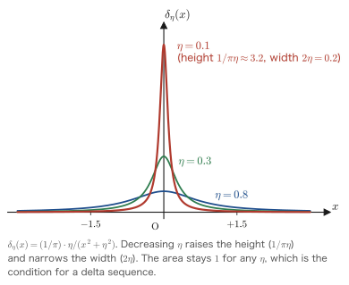

Appendix AMath Notes
When one gets stuck while reading the main text, it is usually not because one does not understand the physics. It is because one cannot recall, on the spot, the mathematical tool being used. How did the change of variables in a delta function go? What do we get when we Fourier transform $\theta(t)$? How do we expand $\ee^{\hat A}\hat B\ee^{-\hat A}$? What is the value of $\int_0^\infty x^3/(\ee^x-1)\dd x$?
This appendix is a toolbox that gathers this kind of “I can't remember” in one place. We did not, however, make it a mere collection of formulas. If formulas are simply listed, one forgets the conditions when using them and makes mistakes. Every formula is accompanied by a proof, however short. With a proof at hand, we can reconstruct from the equations what the conditions were. When in trouble, just go back to the first line of the proof.
At each natural break in the discussion we have placed a Check Example (there are 14 in all; the numbers run consecutively through the appendix, so they do not correspond one-to-one with the section numbers). Please do not simply read through them; stop there and work them out by hand once. This is why we have not provided separate exercises.
Complex analysis (the residue theorem, Jordan's lemma, and deformation of complex integration contours) is covered in its entirety in Chapter 5, so we do not repeat it here. This appendix is in charge of “the mathematics other than that in Chapter 5.”
- If you get stuck in the main text, look at the index table in Section A.13. If you “stumbled in Chapter 10,” the index table sends you to Sections A.4, A.2, A.6, and A.7.
- It helps to skim through the appendix once before you start reading; then, in the main text, you will be able to recall “this was in Appendix A,” which makes things easier.
- While calculating, it is useful to keep Section A.6 (the table of definite integrals) and Section A.9 (the table of commutators) open at hand.
- The Fourier convention and the sign convention of this book are summarized in Section A.1. When an equation from another book does not agree with an equation in this book, check here first. It is usually a difference in convention.
A.1 Fourier Series and the Fourier Transform — The Conventions of This Book
A.1.1 From the Fourier series to the Fourier transform
A function $f(x)$ of period $L$ can be expanded in plane waves of wave number $k_n=2\pi n/L$ ($n$ an integer):
$$ \begin{equation} f(x) = \sum_{n=-\infty}^{\infty} c_n\,\ee^{\ii k_n x}, \qquad k_n = \frac{2\pi n}{L} \label{eq:A-series} \end{equation} $$The device for extracting the coefficient $c_n$ is orthogonality.
Derivation: Orthogonality and the coefficient formula
Step 1: Showing orthogonality. For $n\neq m$ we can write $k_n-k_m=2\pi(n-m)/L$, so
$$ \frac{1}{L}\int_0^L \ee^{\ii(k_n-k_m)x}\dd x = \frac{1}{L}\left[\frac{\ee^{\ii(k_n-k_m)x}}{\ii(k_n-k_m)}\right]_0^L = \frac{1}{L}\cdot\frac{\ee^{\ii\,2\pi(n-m)}-1}{\ii(k_n-k_m)} = 0 $$The last equality follows from $\ee^{\ii2\pi(n-m)}=1$ ($n-m$ is an integer). When $n=m$ the integrand is $1$, so the value is $1$. Summarizing,
$$ \frac{1}{L}\int_0^L \ee^{\ii(k_n-k_m)x}\dd x = \delta_{nm} $$Step 2: Extracting the coefficient. Multiply both sides of Eq. \eqref{eq:A-series} by $\ee^{-\ii k_m x}$, integrate from $0$ to $L$, and multiply by $1/L$:
$$ \frac{1}{L}\int_0^L f(x)\ee^{-\ii k_m x}\dd x = \sum_n c_n\cdot\frac{1}{L}\int_0^L\ee^{\ii(k_n-k_m)x}\dd x = \sum_n c_n\delta_{nm} = c_m $$That is,
$$ \begin{equation} c_n = \frac{1}{L}\int_0^L f(x)\,\ee^{-\ii k_n x}\dd x \label{eq:A-cn} \end{equation} $$∎ “Multiply both sides by $\ee^{-\ii k_m x}$ and integrate”—at bottom, this one operation is all there is to Fourier analysis.
Derivation: The limit $L\to\infty$ — the sum becomes an integral
If we make the period $L$ infinitely large, the spacing between adjacent wave numbers
$$ \Delta k = k_{n+1}-k_n = \frac{2\pi}{L} $$approaches $0$, and $k_n$ becomes a continuous variable. To convert the sum into an integral, we write
$$ \sum_n (\cdots) = \sum_n \frac{\Delta k}{\Delta k}(\cdots) = \frac{L}{2\pi}\sum_n \Delta k\,(\cdots) \;\xrightarrow{\ L\to\infty\ }\; \frac{L}{2\pi}\int \dd k\,(\cdots) $$Here $c_n$ tends to $0$ as $L\to\infty$ (because Eq. \eqref{eq:A-cn} has a factor $1/L$ in front), so as the new unknown function we choose the quantity kept finite by multiplying by $L$:
$$ \tilde f(k) \equiv L\,c_n\big|_{k_n=k} = \int_{-\infty}^{\infty} f(x)\,\ee^{-\ii kx}\dd x $$Substituting this back into Eq. \eqref{eq:A-series}, we obtain
$$ f(x) = \sum_n \frac{\tilde f(k_n)}{L}\ee^{\ii k_n x} = \sum_n \frac{\Delta k}{2\pi}\tilde f(k_n)\ee^{\ii k_n x} \;\longrightarrow\; \int_{-\infty}^{\infty}\frac{\dd k}{2\pi}\,\tilde f(k)\,\ee^{\ii kx} $$∎ The fact that $2\pi$ appears only on the inverse-transform side comes from $\Delta k=2\pi/L$, the “spacing of the wave numbers in a box.” This is why physics textbooks prefer to write $\int\frac{\dd k}{2\pi}$.
A.1.2 The conventions of this book (time and space)
Definition: The Fourier transform of this book
Time $\leftrightarrow$ frequency:
Space $\leftrightarrow$ wave number:
Note that the sign in the exponent of $\ee$ is opposite for time and for space. This is not perversity: it is so that, when the two are combined,
$$ f(\xx,t) = \int\frac{\dd^3q}{(2\pi)^3}\int\frac{\dd\omega}{2\pi}\,f(\qq,\omega)\,\ee^{\ii(\qq\cdot\xx-\omega t)} $$the fundamental mode becomes $\ee^{\ii(\qq\cdot\xx-\omega t)}$, a wave traveling in the $+\qq$ direction. This is the most natural convention in physics.
Replacement rules that follow immediately from this convention
- $\dfrac{\partial}{\partial t}\;\longrightarrow\;-\ii\omega$ (the time derivative becomes multiplication by $-\ii\omega$)
- $\nabla\;\longrightarrow\;+\ii\qq$, and therefore $\nabla^2\;\longrightarrow\;-q^2$
- Time translation: $f(t-a)\;\longrightarrow\;\ee^{\ii\omega a}f(\omega)$
- $t\,f(t)\;\longrightarrow\;-\ii\dfrac{\partial}{\partial\omega}f(\omega)$
Let us check the first one. Integrating by parts and assuming $f\to0$ as $t\to\pm\infty$, we obtain
$$ \int_{-\infty}^{\infty}\dd t\,\frac{\partial f}{\partial t}\ee^{\ii\omega t} = \underbrace{\Big[f(t)\ee^{\ii\omega t}\Big]_{-\infty}^{\infty}}_{=0} - \ii\omega\int_{-\infty}^{\infty}\dd t\,f(t)\ee^{\ii\omega t} = -\ii\omega\,f(\omega) $$The fourth follows from $\dfrac{\partial}{\partial\omega}\ee^{\ii\omega t}=\ii t\,\ee^{\ii\omega t}$.
Differences in convention from other books — if the equations do not match, suspect this first
The convention for the Fourier transform differs from book to book. Because one convention is converted into another simply by replacing $\ii\to-\ii$ throughout, the physics is the same; but the signs in the intermediate equations all change, so carrying an equation over from another book unchanged is certain to cause trouble.
| Reference / field | $t\to\omega$ | $\omega\to t$ | $\partial_t$ | Half-plane where the retarded function is analytic |
|---|---|---|---|---|
| This book / Fetter–Walecka | $\int\dd t\,\ee^{+\ii\omega t}$ | $\int\frac{\dd\omega}{2\pi}\ee^{-\ii\omega t}$ | $-\ii\omega$ | Upper half-plane |
| Mahan, Bruus–Flensberg | $\int\dd t\,\ee^{+\ii\omega t}$ | $\int\frac{\dd\omega}{2\pi}\ee^{-\ii\omega t}$ | $-\ii\omega$ | Upper half-plane |
| Engineering, signal processing, mathematics | $\int\dd t\,\ee^{-\ii\omega t}$ | $\int\frac{\dd\omega}{2\pi}\ee^{+\ii\omega t}$ | $+\ii\omega$ | Lower half-plane |
| Symmetric convention (common in quantum mechanics textbooks) | $\frac{1}{\sqrt{2\pi}}\int\dd t\,\ee^{\ii\omega t}$ | $\frac{1}{\sqrt{2\pi}}\int\dd\omega\,\ee^{-\ii\omega t}$ | $-\ii\omega$ | Upper half-plane |
| Electric circuits ($\ee^{\ii\omega t}$ convention, $j=-\ii$) | $\int\dd t\,\ee^{-j\omega t}$ | — | $+j\omega$ | — |
An example of real harm. The susceptibility of the damped oscillator in Chapter 3 is, in the convention of this book,
$$ \chi(\omega) = \frac{1}{m(\omega_0^2-\omega^2)-\ii\gamma\omega} $$but in books that use the engineering convention $\ee^{-\ii\omega t}\to\ee^{+\ii\omega t}$, it is written as
$$ \chi(\omega) = \frac{1}{m(\omega_0^2-\omega^2)+\ii\gamma\omega} $$The two are complex conjugates of each other and describe the same physics. However, “whether absorption means $\mathrm{Im}\,\chi>0$ or $<0$” and “whether $\chi$ is analytic in the upper half-plane or the lower half-plane” are all interchanged. When consulting another book, make it a habit to check this convention at the beginning of the book first.
Note also that where the $2\pi$ is placed (gathered on one side or split as $1/\sqrt{2\pi}$ on each side) and the sign of $\ee^{\pm\ii\qq\cdot\xx}$ in the spatial transform differ from book to book. They may even change between editions, so before actually using a formula, always check the relevant passage of the book in question.
A.1.3 Parseval's identity
Theorem A.1 (Parseval / Plancherel identity)
More generally, $\displaystyle\int\dd t\,f^*(t)g(t)=\int\frac{\dd\omega}{2\pi}f(\omega)^*g(\omega)$.
Proof
Substitute the inverse transform \eqref{eq:A-ft-time} into both $f^*(t)$ and $g(t)$. For $f^*(t)$ we take the complex conjugate, so the sign in the exponent of $\ee$ is reversed; writing the integration variable as $\omega'$, we have
$$ f^*(t) = \int\frac{\dd\omega'}{2\pi}f^*(\omega')\,\ee^{+\ii\omega' t}, \qquad g(t) = \int\frac{\dd\omega}{2\pi}g(\omega)\,\ee^{-\ii\omega t} $$Multiply them and integrate over $t$. Carrying out the $t$ integral first, by the integral representation \eqref{eq:A-delta-rep} of the delta function in Section A.2 we have
$$ \int_{-\infty}^{\infty}\dd t\;\ee^{\ii(\omega'-\omega)t} = 2\pi\,\delta(\omega'-\omega) $$Therefore
$$ \int\dd t\,f^*(t)g(t) = \int\frac{\dd\omega'}{2\pi}\int\frac{\dd\omega}{2\pi}\,f^*(\omega')g(\omega)\cdot2\pi\delta(\omega'-\omega) = \int\frac{\dd\omega}{2\pi}\,f^*(\omega)g(\omega) $$∎ Of the two factors of $2\pi$, one is eaten by the delta function, leaving one factor $\frac{1}{2\pi}$ on the right-hand side. This “bookkeeping of $2\pi$” is the easiest place to make a mistake in Fourier transform calculations, so whenever in doubt, be sure to retrace this derivation.
Physical Meaning: How the energy is shared
If $f(t)$ is the amplitude of a signal, then $\abs{f(t)}^2$ is proportional to the instantaneous power, and the left-hand side is the total energy. Parseval's identity says that the total does not change even when this is decomposed into frequency components. $\abs{f(\omega)}^2$ is called the power spectrum.
The fact that the total integral of the spectral function $S_{AB}(\omega)$ in Chapter 8 gave the fluctuation $\braket{\hat A\hat B}$ is also, in essence, this identity (that one is the correlation-function version, and is organized as the Wiener–Khinchin theorem in Section A.5.3).
A.1.4 The spatial Fourier transform and the Coulomb potential
In Chapters 9–11 we repeatedly use the Fourier transform of the Coulomb interaction
(in Gaussian units). As it stands, this integral does not converge at $r\to\infty$. The correct approach is to insert Yukawa-type screening first and remove it at the end.
Derivation: The Fourier transform of the Yukawa potential (the straightforward approach)
Step 1: Inserting the screening factor. Let $\mu>0$ and compute
$$ I(\mu) \equiv \int\dd^3x\;\frac{\ee^{-\mu r}}{r}\,\ee^{-\ii\qq\cdot\xx}, \qquad r=\abs{\xx} $$then take $\mu\to0^+$ at the end.
Step 2: Introducing polar coordinates with $\qq$ as the polar axis. We have $\qq\cdot\xx = qr\cos\theta$. Also $\dd^3x = r^2\dd r\,\sin\theta\,\dd\theta\,\dd\varphi$, and the $\varphi$ integral gives $2\pi$. Setting $u=\cos\theta$ gives $\sin\theta\dd\theta=-\dd u$, and the range of integration $u:1\to-1$ is restored to $-1\to1$ by the minus sign in $-\dd u$:
$$ I(\mu) = 2\pi\int_0^{\infty}\dd r\;r^2\,\frac{\ee^{-\mu r}}{r}\int_{-1}^{1}\dd u\;\ee^{-\ii qru} $$Step 3: The angular integral.
$$ \int_{-1}^{1}\dd u\;\ee^{-\ii qru} = \left[\frac{\ee^{-\ii qru}}{-\ii qr}\right]_{-1}^{1} = \frac{\ee^{-\ii qr}-\ee^{+\ii qr}}{-\ii qr} = \frac{-2\ii\sin qr}{-\ii qr} = \frac{2\sin qr}{qr} $$Step 4: The radial integral. Since $r^2\cdot\frac1r\cdot\frac{2\sin qr}{qr}=\frac{2\sin qr}{q}$,
$$ I(\mu) = 2\pi\cdot\frac{2}{q}\int_0^{\infty}\dd r\;\ee^{-\mu r}\sin qr = \frac{4\pi}{q}\cdot\frac{q}{\mu^2+q^2} = \frac{4\pi}{q^2+\mu^2} $$Here we used the formula of Section A.6, Eq. \eqref{eq:A-expsin}, $\displaystyle\int_0^\infty\ee^{-ax}\sin bx\,\dd x=\frac{b}{a^2+b^2}$.
Step 5: $\mu\to0^+$. For $q\neq0$ the limit can be taken, giving $I(0)=4\pi/q^2$. Multiplying by $e^2$ gives Eq. \eqref{eq:A-coulomb}. $\blacksquare$
Physical Meaning: The divergence of $1/q^2$ is the true nature of the long-range force
As $q\to0$, $v(q)=4\pi e^2/q^2$ diverges. The limit $q\to0$ means “a very long wavelength,” that is, a component that reaches out to infinity. The fact that the Coulomb force is a long-range force appears in the formulas in the form of the denominator $q^2$.
Conversely, when screening takes effect and $\mu=q_{TF}$ (the Thomas–Fermi wave number), we obtain $v_{\text{eff}}(q)=4\pi e^2/(q^2+q_{TF}^2)$, which stays finite even as $q\to0$. The discussion of screening in Chapter 10 explains how this $\mu$ arises physically. The $\mu$ that we inserted in Step 1 for computational convenience returns in Chapter 10 as an actual screening length.
Check Example A.1
Find the Fourier transform of the three-dimensional Gaussian distribution $f(\xx)=\ee^{-\alpha r^2}$.
Solution. Decomposing into Cartesian coordinates, we have $\ee^{-\alpha r^2}=\ee^{-\alpha x^2}\ee^{-\alpha y^2}\ee^{-\alpha z^2}$, and the exponent also splits as $\qq\cdot\xx=q_xx+q_yy+q_zz$, so the result is a product of three one-dimensional integrals. In one dimension, completing the square gives
$$ \int_{-\infty}^{\infty}\dd x\,\ee^{-\alpha x^2}\ee^{-\ii q_x x} = \int\dd x\,\ee^{-\alpha\left(x+\frac{\ii q_x}{2\alpha}\right)^2}\ee^{-q_x^2/4\alpha} = \sqrt{\frac{\pi}{\alpha}}\,\ee^{-q_x^2/4\alpha} $$(On the complex plane we translated the contour along the imaginary axis, but since the integrand is analytic and vanishes at infinity, the value does not change. This is Cauchy's integral theorem of Chapter 5.) Hence
$$ f(\qq) = \left(\frac{\pi}{\alpha}\right)^{3/2}\ee^{-q^2/4\alpha} $$The Fourier transform of a Gaussian function is a Gaussian function, and the width is exchanged from $\sqrt{1/\alpha}$ to $\sqrt{4\alpha}$ in inverse proportion (the product of the two is $\sqrt{1/\alpha}\cdot\sqrt{4\alpha}=2$, independent of $\alpha$). Narrow in real space means broad in wave-number space—this is the mathematical content of the uncertainty relation.
A.2 The Dirac Delta Function
A.2.1 Definition — not a function but a “symbol that has meaning inside an integral”
Definition: The delta function
$\delta(x)$ is defined as the object satisfying, for any (sufficiently smooth) function $f(x)$,
In particular, setting $f\equiv1$ gives $\int\delta(x)\dd x=1$.
This is not a “function.” No function exists that is infinite at $x=0$, zero elsewhere, and yet has integral $1$. $\delta$ is a distribution, a symbol that has meaning only when it appears inside an integral. One must never write an expression such as “$\delta(0)=\infty$” on its own.
Why do we need such a thing?
In physics we constantly want to handle “a quantity concentrated at a single point”: the charge density of a point charge, an impulsive force applied for just an instant at time $0$, a spectral line standing at a discrete energy level. To write these as “densities” we always need the delta function.
The leading player in this book is $\chi''$ of Chapter 8. The excitation spectrum of a finite system is a discrete line spectrum, and the only way to write it as a function of the continuous variable $\omega$ is as a comb of delta functions. Also, in the Lindhard function of Chapter 10, the delta function appears in the form of the energy conservation law $\delta(\hbar\omega-\epsilon_{\kk+\qq}+\epsilon_\kk)$, and serves as a tool that reduces the integral over $\qq$-space to an “integral over a shell.”
A.2.2 Basic properties and their proofs
Theorem A.2 (Basic properties of the delta function)
- Even function: $\delta(-x)=\delta(x)$
- Scaling: $\displaystyle\delta(ax)=\frac{\delta(x)}{\abs{a}}$ ($a\neq0$)
- Multiplication: $x\,\delta(x)=0$, $f(x)\delta(x-a)=f(a)\delta(x-a)$
- Derivative: $\displaystyle\int f(x)\,\delta'(x-a)\,\dd x = -f'(a)$
- Composition: if $g$ has only simple zeros $x_i$ ($g(x_i)=0$, $g'(x_i)\neq0$), then $\displaystyle\delta\big(g(x)\big)=\sum_i\frac{\delta(x-x_i)}{\abs{g'(x_i)}}$
Proof
(2) Scaling. For $a>0$, setting $y=ax$ gives $\dd x=\dd y/a$, and the direction of integration does not change, so
$$ \int_{-\infty}^{\infty}f(x)\delta(ax)\dd x = \int_{-\infty}^{\infty}f\!\left(\frac{y}{a}\right)\delta(y)\frac{\dd y}{a} = \frac{f(0)}{a} $$For $a<0$, setting $y=ax$ interchanges the upper and lower limits of integration, so a factor $-1$ appears to restore the sign:
$$ \int_{-\infty}^{\infty}f(x)\delta(ax)\dd x = \int_{+\infty}^{-\infty}f\!\left(\frac{y}{a}\right)\delta(y)\frac{\dd y}{a} = -\frac{f(0)}{a} = \frac{f(0)}{\abs{a}} $$Both cases together give $f(0)/\abs{a}$. This is the same as integrating $\delta(x)/\abs{a}$. $\blacksquare$
(1) is nothing other than the case $a=-1$ of (2).
(4) Derivative. Integrate by parts. Since we may assume that $f$ vanishes at infinity, the boundary term drops out:
$$ \int f(x)\delta'(x-a)\dd x = \underbrace{\Big[f(x)\delta(x-a)\Big]_{-\infty}^{\infty}}_{=0} - \int f'(x)\delta(x-a)\dd x = -f'(a) $$$\blacksquare$ (The derivative of the delta function, too, is a symbol that acquires meaning through integration by parts.)
(5) Composition. The delta function acts only near the points where $g(x)=0$. Take only the neighborhood of a zero $x_i$ and Taylor-expand $g$ there:
$$ g(x) \simeq g'(x_i)\,(x-x_i) $$The contribution from the neighborhood $[x_i-\varepsilon, x_i+\varepsilon]$ of $x_i$ follows from property (2) with $a=g'(x_i)$:
$$ \int_{x_i-\varepsilon}^{x_i+\varepsilon} f(x)\,\delta\big(g'(x_i)(x-x_i)\big)\dd x = \frac{f(x_i)}{\abs{g'(x_i)}} $$Summing over all the zeros gives the claim. $\blacksquare$
∎ Note that the absolute value $\abs{\cdot}$ appears. Even if $g'$ is negative, the contribution is positive. Dropping the absolute value here is the most common mistake with this formula.
Check Example A.2: $\delta(x^2-a^2)$
Suppose $a>0$. Rewrite $\delta(x^2-a^2)$ as a sum of simple delta functions.
Solution. The zeros of $g(x)=x^2-a^2$ are the two points $x=\pm a$. Since $g'(x)=2x$, we have $\abs{g'(\pm a)}=2a$. By formula (5),
$$ \delta(x^2-a^2) = \frac{\delta(x-a)}{2a}+\frac{\delta(x+a)}{2a} $$Therefore $\displaystyle\int_{-\infty}^{\infty}f(x)\delta(x^2-a^2)\dd x = \frac{f(a)+f(-a)}{2a}$.
Where it is used. In Chapters 10 and 12, this form appears when the energy-conservation delta function is converted into a delta function in the magnitude of the momentum. For example, rewriting $\delta\!\left(\hbar\omega-\frac{\hbar^2k^2}{2m}\right)$ in terms of $k$ puts $\abs{g'}=\hbar^2k/m$ in the denominator, and this is the origin of the factor $\propto k$ in the density of states.
A.2.3 Representations of the delta function (delta sequences)
The delta function can be realized as the limit of a sequence of functions whose widths shrink while their areas are kept at $1$. We list the ones that are used most often.
Theorem A.3 (Delta sequences and the integral representation)
Proof (the four representations, one at a time)
(a) Integral representation. Applying in succession the transform and the inverse transform derived in Section A.1.1 gives
$$ f(x) = \int\frac{\dd k}{2\pi}\ee^{\ii kx}\int\dd x'\,f(x')\ee^{-\ii kx'} = \int\dd x'\,f(x')\underbrace{\int\frac{\dd k}{2\pi}\ee^{\ii k(x-x')}}_{\textstyle \equiv\;?} $$Since this holds for any $f$, the underbraced part must be $\delta(x-x')$ by the definition, Eq. \eqref{eq:A-delta-def}. $\blacksquare$
(b) Lorentzian form. Insert the convergence factor $\ee^{-\eta\abs{k}}$ into the integral in (a) and compute:
$$ \int_{-\infty}^{\infty}\frac{\dd k}{2\pi}\ee^{\ii kx}\ee^{-\eta\abs{k}} = \frac{1}{2\pi}\left[\int_0^{\infty}\ee^{(\ii x-\eta)k}\dd k + \int_0^{\infty}\ee^{(-\ii x-\eta)k}\dd k\right] $$ $$ = \frac{1}{2\pi}\left[\frac{1}{\eta-\ii x}+\frac{1}{\eta+\ii x}\right] = \frac{1}{2\pi}\cdot\frac{2\eta}{\eta^2+x^2} = \frac{1}{\pi}\frac{\eta}{x^2+\eta^2} $$Since this returns to (a) as $\eta\to0^+$, it too is a delta sequence. $\blacksquare$
The conservation of area can be checked directly: $\displaystyle\int_{-\infty}^{\infty}\frac{1}{\pi}\frac{\eta\,\dd x}{x^2+\eta^2}=\frac{1}{\pi}\Big[\arctan\frac{x}{\eta}\Big]_{-\infty}^{\infty}=\frac{1}{\pi}\left(\frac{\pi}{2}+\frac{\pi}{2}\right)=1$. The peak height is $1/(\pi\eta)$ and the full width at half maximum is $2\eta$, and their product does not depend on $\eta$.
(c) Gaussian form. By the Gaussian integral of Section A.6 (#1 of Table A.2, with $a=1/2\sigma^2$), the area is $\frac{1}{\sqrt{2\pi}\sigma}\sqrt{2\pi\sigma^2}=1$. As $\sigma\to0$ the width is $\sigma$ and the height is $1/\sqrt{2\pi}\sigma$, so here too the product is constant. $\blacksquare$
(d) Sinc form. Truncating the integral in (a) to the finite interval $[-L,L]$ gives
$$ \int_{-L}^{L}\frac{\dd k}{2\pi}\ee^{\ii kx} = \frac{1}{2\pi}\cdot\frac{\ee^{\ii Lx}-\ee^{-\ii Lx}}{\ii x} = \frac{\sin Lx}{\pi x} $$The area is $1$ by $\int_{-\infty}^{\infty}\frac{\sin u}{u}\dd u=\pi$ of Section A.6. As $L\to\infty$ it becomes the delta function. $\blacksquare$
∎ All four have the same structure, “height $\times$ width $=$ constant.” Which one to use may be chosen for computational convenience, but in this book the Lorentzian appears most often, because it comes out automatically from the $\ii\eta$ of the response function (Section A.4).

A.2.4 The three-dimensional delta function
In three dimensions we simply define it as the product of the components:
$$ \begin{equation} \delta^{(3)}(\xx-\xx') \equiv \delta(x-x')\,\delta(y-y')\,\delta(z-z'), \qquad \int\dd^3x\;f(\xx)\,\delta^{(3)}(\xx-\xx') = f(\xx') \label{eq:A-delta-3d} \end{equation} $$The integral representation is $\displaystyle\delta^{(3)}(\xx)=\int\frac{\dd^3k}{(2\pi)^3}\ee^{\ii\kk\cdot\xx}$.
Representation in polar coordinates, and $\nabla^2(1/r)$
In the spherically symmetric case, noting that $\dd^3x=r^2\dd r\,\dd\Omega$, we have
$$ \delta^{(3)}(\xx) = \frac{\delta(r)}{4\pi r^2} $$(check that $\int\frac{\delta(r)}{4\pi r^2}r^2\dd r\,\dd\Omega=\frac{4\pi}{4\pi}=1$; since $r=0$ is an endpoint of the radial integral $\int_0^\infty$, we adopt here the convention that $\int_0^\infty\delta(r)\dd r=1$). If the $r^2$ in the denominator is dropped, the integral no longer comes out right.
Also, the identity that appears frequently in electrostatics,
$$ \nabla^2\frac{1}{r} = -4\pi\,\delta^{(3)}(\xx) $$can be verified as follows. For $r\neq0$, direct calculation gives $\nabla^2(1/r)=0$. Integrating over a sphere of radius $R$ that contains the origin and using Gauss's divergence theorem, we obtain
$$ \int_{r<R}\nabla^2\frac{1}{r}\dd^3x = \oint_{r=R}\nabla\frac{1}{r}\cdot\dd\bm{S} = \oint_{r=R}\left(-\frac{1}{R^2}\right)R^2\dd\Omega = -4\pi $$“Zero for $r\neq0$, and an integral of $-4\pi$ around the origin” is precisely $-4\pi\delta^{(3)}(\xx)$. Fourier transforming this gives $-q^2\cdot\frac{4\pi}{q^2}=-4\pi$, which is consistent with Eq. \eqref{eq:A-coulomb}. The operation in Chapters 9 and 10 of rewriting the Poisson equation $\nabla^2\phi=-4\pi\rho$ in $q$-space as $q^2\phi(\qq)=4\pi\rho(\qq)$ is exactly this relation.
Check Example A.3
Find $\displaystyle\int_{-\infty}^{\infty}\dd x\;\ee^{-x^2}\,\delta(3x-6)$.
Solution. The zero of $g(x)=3x-6$ is $x=2$, and $\abs{g'}=3$. Hence $\delta(3x-6)=\delta(x-2)/3$, and
$$ \int\ee^{-x^2}\frac{\delta(x-2)}{3}\dd x = \frac{\ee^{-4}}{3} = 6.1\times10^{-3} $$A typical mistake is to forget to divide by $\abs{g'}=3$ and obtain $\ee^{-4}$. When the argument of the delta function is not $x$ itself, always divide by the absolute value of the derivative.
A.3 The Step Function and the Sign Function
A.3.1 Definition, and the fact that its derivative is a delta function
Definition: The Heaviside step function
The value at $t=0$ does not affect the result as long as the function is used as a distribution (the value at a single point does not contribute to an integral). In contexts that emphasize symmetry, one sometimes adopts the convention $\theta(0)=1/2$.
In this book it is used throughout as the tool that expresses causality. $\chi^R(t)\propto\theta(t)$ is the mathematical expression of “there is no response for $t<0$ = no effect appears before its cause” (Chapters 1, 2, 4, 7, and 8).
Theorem A.4
Proof
The derivative of a distribution is defined by moving the derivative onto the test function $f$ by integration by parts. The boundary term vanishes because $f(\pm\infty)=0$, so
$$ \int_{-\infty}^{\infty}\dd t\; f(t)\,\frac{\dd\theta}{\dd t} = \underbrace{\Big[f(t)\theta(t)\Big]_{-\infty}^{\infty}}_{=0} - \int_{-\infty}^{\infty}\dd t\;f'(t)\,\theta(t) $$Thanks to $\theta$, the lower limit of the integral on the right-hand side becomes $0$, so
$$ -\int_{0}^{\infty}\dd t\;f'(t) = -\Big[f(t)\Big]_0^{\infty} = -\big(0-f(0)\big) = f(0) $$That is, $\displaystyle\int f(t)\frac{\dd\theta}{\dd t}\dd t=f(0)$. This is nothing other than the definition of the delta function \eqref{eq:A-delta-def}. $\blacksquare$
∎ Intuitively, this means that “$\theta$ rises instantaneously from $0$ to $1$ at $t=0$. The slope is infinite only at $t=0$, and the area (the size of the rise) is $1$.”
Physical Meaning: Step response and impulse response
Eq. \eqref{eq:A-theta-deriv} is directly connected with experiment. The response of a system to a step-like force (a switch is turned on at $t=0$ and a constant force is applied from then on) is called the step response, and the response to an impulsive force in the form of a delta function (kicking the system for just an instant) is called the impulse response. By Eq. \eqref{eq:A-theta-deriv} we have
$$ (\text{impulse response}) = \frac{\dd}{\dd t}(\text{step response}) $$In experiments, applying a step-like force is far easier than applying an impulsive force exactly, so in practice one measures the step response and differentiates it to obtain the impulse response = the response function $\chi(t)$. This is the sense in which Chapter 1 called $\chi(t)$ the “impulse response.”
A.3.2 The integral representation of $\theta(t)$ — where causality produces $+\ii\eta$
One of the most important formulas in this book is the integral representation of the step function. Every $+\ii\eta$ in Chapters 2, 5, 7, and 8 comes from here.
Theorem A.5 (Integral representation of $\theta$)
Written from the Fourier-transform side, the same statement reads
$$ \begin{equation} \theta(\omega) \equiv \int_{-\infty}^{\infty}\dd t\;\theta(t)\ee^{\ii\omega t} = \frac{\ii}{\omega+\ii\eta} \label{eq:A-theta-ft} \end{equation} $$Proof 1: Checking with the residue theorem (using the tools of Chapter 5)
The integrand $\dfrac{\ee^{-\ii\omega t}}{\omega+\ii\eta}$ has a simple pole at $\omega=-\ii\eta$ (slightly below the real axis) in the complex $\omega$-plane. We close the contour with a large semicircle, but which side we close on is determined by the sign of $t$. Writing $\omega=\omega'+\ii\omega''$, the following relation
$$ \abs{\ee^{-\ii\omega t}} = \abs{\ee^{-\ii\omega' t}\ee^{\omega'' t}} = \ee^{\omega'' t} $$holds.
(i) For $t<0$. The factor $\ee^{\omega''t}$ decays for $\omega''>0$, that is, in the upper half-plane. There is no pole inside a contour closed in the upper half-plane (the pole is at $-\ii\eta$, in the lower half-plane). By Jordan's lemma (Chapter 5) the contribution of the large semicircle vanishes, so by Cauchy's integral theorem
$$ \oint = 0 \quad\Longrightarrow\quad \int_{-\infty}^{\infty}\frac{\dd\omega}{2\pi\ii}\frac{\ee^{-\ii\omega t}}{\omega+\ii\eta}=0 \quad\Longrightarrow\quad \theta(t)=0 \;\;\checkmark $$(ii) For $t>0$. The factor decays for $\omega''<0$, that is, in the lower half-plane. Closing in the lower half-plane encloses one pole, $\omega=-\ii\eta$. However, a contour closed in the lower half-plane, viewed from the real axis, runs clockwise, so the sign in the residue theorem is reversed and a factor $-2\pi\ii$ appears:
$$ \oint \frac{\ee^{-\ii\omega t}}{\omega+\ii\eta}\dd\omega = -2\pi\ii\;\Res_{\omega=-\ii\eta}\frac{\ee^{-\ii\omega t}}{\omega+\ii\eta} = -2\pi\ii\;\ee^{-\ii(-\ii\eta)t} = -2\pi\ii\,\ee^{-\eta t} $$Therefore
$$ -\int\frac{\dd\omega}{2\pi\ii}\frac{\ee^{-\ii\omega t}}{\omega+\ii\eta} = -\frac{1}{2\pi\ii}\left(-2\pi\ii\,\ee^{-\eta t}\right) = \ee^{-\eta t} \;\xrightarrow{\;\eta\to0^+\;}\; 1 \;\;\checkmark $$$\blacksquare$ Combining the two cases, Eq. \eqref{eq:A-theta-int} indeed gives $\theta(t)$.
Proof 2: Obtaining Eq. \eqref{eq:A-theta-ft} by direct Fourier transformation
Going in the opposite direction, let us transform $\theta(t)$ as defined. As it stands, the oscillation does not die out as $t\to\infty$, so we insert a convergence factor $\ee^{-\eta t}$:
$$ \theta(\omega) = \int_{0}^{\infty}\dd t\;\ee^{\ii\omega t}\ee^{-\eta t} = \int_0^{\infty}\dd t\;\ee^{\ii(\omega+\ii\eta)t} = \left[\frac{\ee^{\ii(\omega+\ii\eta)t}}{\ii(\omega+\ii\eta)}\right]_0^{\infty} = \frac{0-1}{\ii(\omega+\ii\eta)} = \frac{\ii}{\omega+\ii\eta} $$The last step uses $-1/\ii=+\ii$. Inverting this transform gives
$$ \theta(t) = \int\frac{\dd\omega}{2\pi}\frac{\ii\,\ee^{-\ii\omega t}}{\omega+\ii\eta} = -\int\frac{\dd\omega}{2\pi\ii}\frac{\ee^{-\ii\omega t}}{\omega+\ii\eta} $$(We used $\ii = -1/\ii$.) This agrees with Eq. \eqref{eq:A-theta-int}. $\blacksquare$
∎ Proof 2 is the more essential one. The moment the convergence factor $\ee^{-\eta t}$ is inserted, $\omega\to\omega+\ii\eta$ is born and the pole is pushed below the real axis. The adiabatic switching $\ee^{\eta t}$ of Chapter 6 and the $+\ii\eta$ of the Lehmann representation in Chapter 8 are exactly the same operation.
A.3.3 The sign function and its Fourier transform
Definition: The sign function
$$ \mathrm{sgn}(t) \equiv \begin{cases} +1 & (t>0)\\ -1 & (t<0)\end{cases} \qquad\Longleftrightarrow\qquad \mathrm{sgn}(t) = 2\theta(t)-1, \quad \theta(t)=\frac{1+\mathrm{sgn}(t)}{2} $$Also, $\abs{t}=t\,\mathrm{sgn}(t)$, $\dfrac{\dd}{\dd t}\abs{t}=\mathrm{sgn}(t)$, and $\dfrac{\dd}{\dd t}\mathrm{sgn}(t)=2\delta(t)$.
Derivation: The Fourier transform of $\mathrm{sgn}$
Split the integral into $t>0$ and $t<0$ and insert the convergence factor $\ee^{-\eta\abs{t}}$ in each:
$$ \mathrm{sgn}(\omega) = \int_0^{\infty}\dd t\,\ee^{\ii(\omega+\ii\eta)t} - \int_{-\infty}^{0}\dd t\,\ee^{\ii(\omega-\ii\eta)t} $$The first term is the same as Eq. \eqref{eq:A-theta-ft}, namely $\dfrac{\ii}{\omega+\ii\eta}$. For the second term, setting $u=-t$,
$$ \int_{-\infty}^{0}\dd t\,\ee^{\ii(\omega-\ii\eta)t} = \int_0^{\infty}\dd u\,\ee^{-\ii(\omega-\ii\eta)u} = \left[\frac{\ee^{-\ii(\omega-\ii\eta)u}}{-\ii(\omega-\ii\eta)}\right]_0^{\infty} = \frac{-\ii}{\omega-\ii\eta}\cdot(-1)\cdot(-1) = \frac{-\ii}{\omega-\ii\eta} $$(Written out carefully, it is $\dfrac{0-1}{-\ii(\omega-\ii\eta)}=\dfrac{1}{\ii(\omega-\ii\eta)}=\dfrac{-\ii}{\omega-\ii\eta}$.) Therefore
$$ \mathrm{sgn}(\omega) = \frac{\ii}{\omega+\ii\eta}+\frac{\ii}{\omega-\ii\eta} $$If we apply the Sokhotski–Plemelj formula \eqref{eq:A-sp} of the next section to both terms, the delta-function terms cancel each other because of their opposite signs, and only the principal value remains:
∎ Let us also check this in passing. Using $\theta=(1+\mathrm{sgn})/2$ and the fact that the transform of the constant $1$ is $2\pi\delta(\omega)$, we have
$$ \theta(\omega) = \frac{1}{2}\left[2\pi\delta(\omega)+\frac{2\ii}{\omega}\right] = \pi\delta(\omega)+\ii\,\PV\frac{1}{\omega} $$On the other hand, applying Sokhotski–Plemelj to Eq. \eqref{eq:A-theta-ft} also gives
$$ \frac{\ii}{\omega+\ii\eta} = \ii\left[\PV\frac1\omega-\ii\pi\delta(\omega)\right] = \pi\delta(\omega)+\ii\PV\frac1\omega $$and the two indeed agree.
Check Example A.4
Find the Fourier transform of the decaying response $\chi(t)=\theta(t)\,\ee^{-\Gamma t}$ ($\Gamma>0$) and state where the pole is.
Solution. Thanks to $\theta$, the lower limit of integration is $0$:
$$ \chi(\omega) = \int_0^{\infty}\dd t\;\ee^{-\Gamma t}\ee^{\ii\omega t} = \int_0^{\infty}\dd t\;\ee^{(\ii\omega-\Gamma)t} = \left[\frac{\ee^{(\ii\omega-\Gamma)t}}{\ii\omega-\Gamma}\right]_0^{\infty} = \frac{-1}{\ii\omega-\Gamma} = \frac{1}{\Gamma-\ii\omega} = \frac{\ii}{\omega+\ii\Gamma} $$The pole is at $\omega=-\ii\Gamma$, that is, in the lower half-plane. This time it is not $\eta$ but the physical damping rate $\Gamma$ that pushes the pole downward. Letting $\Gamma\to0^+$ takes us back to Eq. \eqref{eq:A-theta-ft}.
What to take away. “The magnitude of the imaginary part of the pole $=$ the damping rate” and “the pole is in the lower half-plane $=$ causal.” The $G^R$ of the damped oscillator in Chapter 2 and the $\chi^R$ of Chapter 8 are both nothing more than reworkings of this structure. One may think of $\eta$ as “the limit in which the damping rate is brought close to zero.”
A.4 Principal-Value Integrals and the Sokhotski–Plemelj Formula
A.4.1 The Cauchy principal value
Definition: Principal value
When the integrand diverges at $x=x_0$ in the form $1/(x-x_0)$, the limit obtained by approaching from both sides symmetrically is called the principal value:
“Symmetrically” is the crux. If we approach from the left and from the right at different rates, the value changes (the divergences do not cancel). The principal value is nothing other than the convention that “cutting out symmetrically makes the result finite.”
Why is it finite?
Near $x_0$ we may regard $f(x)\simeq f(x_0)$, and the dangerous contribution is
$$ f(x_0)\left[\int_{x_0-\delta}^{x_0-\varepsilon}\frac{\dd x}{x-x_0}+\int_{x_0+\varepsilon}^{x_0+\delta}\frac{\dd x}{x-x_0}\right] = f(x_0)\Big[\ln\varepsilon-\ln\delta+\ln\delta-\ln\varepsilon\Big] = 0 $$That is the part to worry about. Since $1/(x-x_0)$ is an odd function about $x_0$, the logarithmic divergences on the left and on the right cancel exactly. The remaining part, $f(x)-f(x_0)$, is finite at $x_0$ ($\simeq f'(x_0)$), so it causes no trouble.
A simple example: $\displaystyle\PV\!\!\int_{-1}^{1}\frac{\dd x}{x}=0$.
A.4.2 The Sokhotski–Plemelj formula
Theorem A.6 (Sokhotski–Plemelj formula)
For a real variable $x$, as an identity of distributions,
that is, for any test function $f$,
$$ \lim_{\eta\to0^+}\int_{-\infty}^{\infty}\frac{f(x)}{x\pm\ii\eta}\dd x = \PV\!\!\int_{-\infty}^{\infty}\frac{f(x)}{x}\dd x \mp \ii\pi f(0) $$How to remember the sign: “If $\ii\eta$ is up, $\delta$ is down (minus).” The sign of $\ii$ in the denominator and the sign of $\ii$ in the delta term are opposite.
Proof 1: Rationalizing the denominator (the clearest route)
Step 1: Separating the real and imaginary parts. Multiplying the numerator and denominator by $x\mp\ii\eta$, we obtain
$$ \frac{1}{x\pm\ii\eta} = \frac{x\mp\ii\eta}{(x\pm\ii\eta)(x\mp\ii\eta)} = \frac{x\mp\ii\eta}{x^2+\eta^2} = \underbrace{\frac{x}{x^2+\eta^2}}_{\text{real part}} \;\mp\; \ii\underbrace{\frac{\eta}{x^2+\eta^2}}_{\text{imaginary part}} $$Step 2: The imaginary part is a delta function. By the Lorentzian representation in Theorem A.3 of Section A.2.3 (part (b) of the proof),
$$ \frac{\eta}{x^2+\eta^2} = \pi\cdot\frac{1}{\pi}\frac{\eta}{x^2+\eta^2} \;\xrightarrow{\;\eta\to0^+\;}\; \pi\,\delta(x) $$Hence the imaginary part is $\mp\ii\pi\delta(x)$. Since the area of the delta sequence was $1$, the factor $\pi$ appears here.
Step 3: The real part is the principal value. If we fix $x\neq0$ and let $\eta\to0$, then $\dfrac{x}{x^2+\eta^2}\to\dfrac1x$. The problem is the neighborhood of the origin, but since this function is an odd function of $x$, the contribution from $[-\delta,\delta]$ is
$$ \int_{-\delta}^{\delta}\frac{x\,f(x)}{x^2+\eta^2}\dd x = \int_{-\delta}^{\delta}\frac{x\,\big[f(x)-f(0)\big]}{x^2+\eta^2}\dd x + f(0)\underbrace{\int_{-\delta}^{\delta}\frac{x\,\dd x}{x^2+\eta^2}}_{=\;0\ (\text{odd})} $$The integrand of the first term is finite as $x\to0$, with $\dfrac{x\cdot f'(0)x}{x^2+\eta^2}\to f'(0)$, so the limit $\eta\to0$ can be taken without difficulty. This is exactly the same as the operation that the principal value, Eq. \eqref{eq:A-pv}, carries out: “dropping the divergent part symmetrically on the left and right.” Hence the real part is $\PV(1/x)$. $\blacksquare$
Proof 2: Viewing it as a deformation of the contour (the viewpoint of Chapter 5)
$\dfrac{1}{x+\ii\eta}$ has a pole at $x=-\ii\eta$ (below the real axis). The integral along the real axis passes above this pole. Instead of pushing the pole up to the real axis ($\eta\to0$), we may equally well think of keeping the pole fixed on the real axis and indenting the contour slightly upward; the result is the same.
The indented contour splits into (i) the principal-value part (the real axis with a symmetric piece cut out on either side of the pole) and (ii) a small semicircle of radius $\varepsilon$ that goes around the pole from above. On the small semicircle, setting $x=\varepsilon\ee^{\ii\phi}$ gives $\dd x=\ii\varepsilon\ee^{\ii\phi}\dd\phi$, and $\phi$ runs from $\pi$ to $0$ (clockwise), so
$$ \int_{\text{small semicircle}}\frac{f(x)}{x}\dd x = \int_{\pi}^{0}\frac{f(\varepsilon\ee^{\ii\phi})}{\varepsilon\ee^{\ii\phi}}\,\ii\varepsilon\ee^{\ii\phi}\dd\phi = \ii\int_{\pi}^{0}f(\varepsilon\ee^{\ii\phi})\dd\phi \;\xrightarrow{\;\varepsilon\to0\;}\; \ii f(0)\,(0-\pi) = -\ii\pi f(0) $$That is, “since it is a half circuit, we get half of $2\pi\ii$, and since it is clockwise, the sign is negative,” which gives $-\ii\pi f(0)$. Combining the two parts,
$$ \int\frac{f(x)}{x+\ii\eta}\dd x = \PV\!\!\int\frac{f(x)}{x}\dd x - \ii\pi f(0) $$$\blacksquare$ If the denominator is $x-\ii\eta$, the pole lies above the axis, the contour is indented downward and makes a counterclockwise half circuit, so we obtain $+\ii\pi f(0)$.
Physical Meaning: The real part is dispersion, the imaginary part is absorption
Every response function is a sum of terms of the form $\dfrac{1}{\omega-\omega_{n}+\ii\eta}$ (the Lehmann representation of Chapter 8). The Sokhotski–Plemelj formula is the tool that splits this as follows:
$$ \underbrace{\PV\frac{1}{\omega-\omega_n}}_{\text{dispersion (real part)}} \;-\;\ii\pi\underbrace{\delta(\omega-\omega_n)}_{\text{absorption (imaginary part)}} $$The real part is effective even when $\omega$ is off resonance, but the imaginary part is effective only exactly at $\omega=\omega_n$. The physics that “a transition truly occurs only when the energies match (= absorption), but even when they do not, the wave still feels the phase (= dispersion)” is contained in this single formula.
This formula shows up all over this book: Chapter 4 (Kramers–Kronig), Chapter 5 (its derivation itself), Chapter 8 (the separation of $\chi'$ and $\chi''$), Chapter 10 (the real and imaginary parts of the Lindhard function), Chapter 11 (Landau damping), and Chapter 13 (analytic continuation). It is fair to call it the most frequently used formula in this book.
A.4.3 The Hilbert transform and the Kramers–Kronig relations
As an application of principal-value integrals, let us check the structure of the Kramers–Kronig relations of Chapter 4.
Derivation: From analyticity in the upper half-plane to the Hilbert transform pair
Suppose that $F(z)$ is analytic in the upper half-plane ($\mathrm{Im}\,z>0$) and tends to $0$ sufficiently fast as $\abs{z}\to\infty$. For a point $\omega$ on the real axis we would like to use Cauchy's integral formula, but since $\omega$ lies on the integration contour, we displace it slightly. Integrating $F(z)/(z-\omega-\ii\eta)$ around a closed contour that closes in the upper half-plane, we find, since there is exactly one pole, $z=\omega+\ii\eta$, inside,
$$ \oint\frac{F(z)}{z-\omega-\ii\eta}\dd z = 2\pi\ii\,F(\omega+\ii\eta) $$On the other hand, since $F$ itself is analytic in the upper half-plane, doing the same with $F(z)/(z-\omega+\ii\eta)$ (whose pole is in the lower half-plane) gives
$$ \oint\frac{F(z)}{z-\omega+\ii\eta}\dd z = 0 $$We apply Sokhotski–Plemelj to the real-axis part of the latter ($\eta\to0^+$; we assume that the large semicircle vanishes):
$$ 0 = \int_{-\infty}^{\infty}\frac{F(\omega')}{\omega'-\omega+\ii\eta}\dd\omega' = \PV\!\!\int_{-\infty}^{\infty}\frac{F(\omega')}{\omega'-\omega}\dd\omega' - \ii\pi F(\omega) $$That is,
Splitting $F=F'+\ii F''$ into real and imaginary parts and comparing the real and imaginary parts of both sides (note that $1/\ii=-\ii$), we obtain
$$ F'(\omega) = \frac{1}{\pi}\PV\!\!\int\frac{F''(\omega')}{\omega'-\omega}\dd\omega', \qquad F''(\omega) = -\frac{1}{\pi}\PV\!\!\int\frac{F'(\omega')}{\omega'-\omega}\dd\omega' $$∎ These are the Kramers–Kronig relations of Chapter 4. In mathematical language, we say that “$F'$ and $F''$ are related to each other by the Hilbert transform.” The only assumptions we used were analyticity in the upper half-plane (= causality) and decay at infinity; the result does not depend at all on the model of the system.
Check Example A.5
Find $\displaystyle\int_{-\infty}^{\infty}\frac{\dd x}{x-a+\ii\eta}$ ($a$ is a real number).
Solution. By Sokhotski–Plemelj,
$$ \int\frac{\dd x}{x-a+\ii\eta} = \PV\!\!\int\frac{\dd x}{x-a} - \ii\pi\int\delta(x-a)\dd x $$Setting $y=x-a$, the first term becomes $\PV\int\dd y/y=0$ (the principal-value integral of an odd function). The second term is $-\ii\pi$. Hence the answer is $-\ii\pi$.
This integral appears, for example, in Chapter 10 when we check the sum rule for the Lindhard function. The line of argument “the principal-value part vanishes by symmetry, and only the delta part remains” is used very often.
A.5 The Convolution Theorem and the Correlation Theorem
A.5.1 Convolution
Definition: Convolution
The change of variables $s=t-t'$ shows that $(f*g)=(g*f)$ (commutativity).
The general form of the response, derived in Chapter 1 from linearity and time-translation invariance,
$$ \delta\braket{\hat A(t)} = \int\dd t'\;\chi^R(t-t')\,f(t') $$is precisely a convolution. “A linear and time-translation-invariant operation can always be written as a convolution”—this was the starting point of linear response theory.
Theorem A.7 (Convolution theorem)
That is, a convolution in the time domain becomes a mere multiplication in the frequency domain.
Proof (without skipping a single line of the change of variables)
Take the Fourier transform according to the definition:
$$ (f*g)(\omega) = \int_{-\infty}^{\infty}\dd t\;\ee^{\ii\omega t}\int_{-\infty}^{\infty}\dd t'\;f(t-t')g(t') $$Step 1: Interchanging the order of integration (assuming absolute convergence).
$$ = \int_{-\infty}^{\infty}\dd t'\;g(t')\int_{-\infty}^{\infty}\dd t\;f(t-t')\,\ee^{\ii\omega t} $$Step 2: Setting $s=t-t'$ in the inner integral. Since $t'$ is fixed, $\dd t=\dd s$, and from $t=s+t'$ we have $\ee^{\ii\omega t}=\ee^{\ii\omega s}\ee^{\ii\omega t'}$. The range of integration in $s$ also remains from $-\infty$ to $\infty$:
$$ \int_{-\infty}^{\infty}\dd s\;f(s)\,\ee^{\ii\omega s}\,\ee^{\ii\omega t'} = \ee^{\ii\omega t'}\,f(\omega) $$Step 3: Substituting back. Since $f(\omega)$ does not depend on $t'$, it can be pulled out of the integral, giving
$$ (f*g)(\omega) = f(\omega)\int_{-\infty}^{\infty}\dd t'\;g(t')\,\ee^{\ii\omega t'} = f(\omega)\,g(\omega) $$$\blacksquare$
∎ Once the trick is revealed, everything comes down to the fact that “$\ee^{\ii\omega t}=\ee^{\ii\omega(t-t')}\ee^{\ii\omega t'}$ can be factored.” The addition law of the exponential function is what the convolution theorem really is.
Why is this so crucially important?
To find a response in the time domain, we have to carry out an integral every time. In the frequency domain, a multiplication is enough. The reason we stated repeatedly, from Chapter 1 through Chapter 3, that “once we find $\chi(\omega)$ the story is over” is this theorem.
Moreover, the fact that $\chi(\omega)$ is the “coefficient in the multiplication” means that $\chi(\omega)$ represents the amplification factor and the phase shift for each frequency component. $\abs{\chi}$ is the amplitude ratio, and $\arg\chi$ is the phase lag. The figures of the resonance curve and the phase in Chapter 3 were read in this way.
A.5.2 Transform of a product (the converse of the convolution theorem)
Theorem A.8
A product in the time domain becomes a convolution in the frequency domain (though with a factor of $1/2\pi$).
Proof
Write only $f(t)$ in the form of the inverse transform:
$$ \int\dd t\,f(t)g(t)\ee^{\ii\omega t} = \int\dd t\left[\int\frac{\dd\omega'}{2\pi}f(\omega')\ee^{-\ii\omega' t}\right]g(t)\,\ee^{\ii\omega t} $$Interchanging the order and carrying out the $t$ integral first, we use $\ee^{-\ii\omega't}\ee^{\ii\omega t}=\ee^{\ii(\omega-\omega')t}$ to obtain
$$ = \int\frac{\dd\omega'}{2\pi}f(\omega')\underbrace{\int\dd t\;g(t)\,\ee^{\ii(\omega-\omega')t}}_{=\,g(\omega-\omega')} = \int\frac{\dd\omega'}{2\pi}f(\omega')g(\omega-\omega') $$$\blacksquare$
Physical Meaning: A finite measurement time blurs the spectrum
In an experiment, we can measure a signal only for a finite time $T$. This is equivalent to multiplying the true signal $f(t)$ by a window function $w(t)$ (equal to $1$ for $0<t<T$ and to $0$ elsewhere). By Theorem A.8, the measured spectrum is
$$ f_{\text{obs}}(\omega) = \int\frac{\dd\omega'}{2\pi}f(\omega')\,w(\omega-\omega') $$That is, it is the true spectrum blurred by the spectrum $w(\omega)$ of the window function. Since the width of $w(\omega)$ is $\sim2\pi/T$, the shorter the measurement time, the poorer the resolution. The resolution limit of a spectrometer, the spectral width of a pulsed laser, and the “uncertainty relation $\Delta\omega\,\Delta t\gtrsim1$” are all different names for this theorem.
The statement in Chapter 8 that “$\eta$ corresponds to a finite measurement time $1/\eta$” is the same story. Taking $\eta$ finite amounts to multiplying by an exponential window $\ee^{-\eta t}$, and as a result the spectrum is blurred by a Lorentzian function of width $\eta$.
A.5.3 The correlation theorem and the Wiener–Khinchin theorem
Theorem A.9 (Correlation theorem)
If we define the cross-correlation function as $\displaystyle C_{fg}(t)\equiv\int_{-\infty}^{\infty}\dd t'\;f^*(t')\,g(t'+t)$, then
Proof
$$ C_{fg}(\omega) = \int\dd t\;\ee^{\ii\omega t}\int\dd t'\;f^*(t')g(t'+t) $$Setting $s=t'+t$ (so that $t=s-t'$ and $\dd t=\dd s$), we have $\ee^{\ii\omega t}=\ee^{\ii\omega s}\ee^{-\ii\omega t'}$, and the double integral separates completely:
$$ = \underbrace{\int\dd t'\;f^*(t')\ee^{-\ii\omega t'}}_{\textstyle=\left[\int\dd t'f(t')\ee^{\ii\omega t'}\right]^*=f(\omega)^*} \;\times\; \underbrace{\int\dd s\;g(s)\ee^{\ii\omega s}}_{\textstyle =g(\omega)} = f(\omega)^*g(\omega) $$(We used the fact that, since $\omega$ is real, the complex conjugate of $\ee^{\ii\omega t'}$ is $\ee^{-\ii\omega t'}$.) $\blacksquare$
The Wiener–Khinchin theorem — what the $S(\omega)$ of Chapter 8 really is
For $f=g$, Eq. \eqref{eq:A-corr} becomes
$$ \int_{-\infty}^{\infty}\dd t\;\ee^{\ii\omega t}\;C_{ff}(t) = \abs{f(\omega)}^2, \qquad C_{ff}(t)=\int\dd t'\,f^*(t')f(t'+t) $$The Fourier transform of the autocorrelation function is the power spectrum—this is known as the Wiener–Khinchin theorem.
The spectral function of Chapter 8,
$$ S_{AB}(\omega) = \frac{1}{2\pi}\int\dd t\;\ee^{\ii\omega t}\braket{\hat A_H(t)\hat B(0)} $$has precisely this form. $\braket{\hat A_H(t)\hat B(0)}$ is the correlation function (in the equilibrium state), and its Fourier transform $S_{AB}(\omega)$ is the power spectrum of the fluctuations. That the fluctuation–dissipation theorem connected the “spectrum of the fluctuations” with “dissipation” can be read physically only thanks to this interpretation.
Check Example A.6
Find the overall response function when two $RC$ circuits (with time constants $\tau_1,\tau_2$) are connected in cascade. The impulse response of each stage is $h_i(t)=\frac{1}{\tau_i}\ee^{-t/\tau_i}\theta(t)$.
Solution. A cascade connection is the convolution $h=h_1*h_2$. By the same calculation as in Check Example A.4,
$$ h_i(\omega) = \frac{1}{\tau_i}\cdot\frac{1}{1/\tau_i-\ii\omega} = \frac{1}{1-\ii\omega\tau_i} $$By the convolution theorem, Eq. \eqref{eq:A-conv},
$$ h(\omega) = \frac{1}{(1-\ii\omega\tau_1)(1-\ii\omega\tau_2)} $$Instead of carrying out a double integral in the time domain, a single multiplication was enough. There are two poles, $\omega=-\ii/\tau_1$ and $\omega=-\ii/\tau_2$, and both lie in the lower half-plane (causal). If $\tau_1=\tau_2$, we get a pole of order 2 (a double pole), and in the time domain a response of the form $t\,\ee^{-t/\tau}$ (corresponding to critical damping) appears.
A.6 Table and Derivations of Frequently Used Definite Integrals
A.6.1 Summary table
| # | Integral | Value | Where it is used |
|---|---|---|---|
| 1 | $\displaystyle\int_{-\infty}^{\infty}\ee^{-ax^2}\dd x$ | $\sqrt{\pi/a}$ | Section A.2 (Gaussian delta sequence), Chapter 13 |
| 2 | $\displaystyle\int_{-\infty}^{\infty}x^{2n}\ee^{-ax^2}\dd x$ | $\dfrac{(2n-1)!!}{(2a)^n}\sqrt{\dfrac{\pi}{a}}$ | Moments of the Maxwell distribution |
| 3 | $\displaystyle\int_0^{\infty}x^{s-1}\ee^{-x}\dd x$ | $\Gamma(s)$ | Basis for 4 and 5 below |
| 4 | $\displaystyle\int_0^{\infty}\frac{x^{s-1}}{\ee^x-1}\dd x$ | $\Gamma(s)\,\zeta(s)$ | Thermodynamic quantities of Bose systems |
| 5 | $\displaystyle\int_0^{\infty}\frac{x^{3}}{\ee^x-1}\dd x$ | $\dfrac{\pi^4}{15}$ | Stefan–Boltzmann law, Debye's $T^3$ law |
| 6 | $\displaystyle\int_0^{\infty}\frac{x^{s-1}}{\ee^x+1}\dd x$ | $(1-2^{1-s})\Gamma(s)\zeta(s)$ | Thermodynamic quantities of Fermi systems |
| 7 | $\displaystyle\int_{-\infty}^{\infty}\frac{x^2\,\ee^x}{(\ee^x+1)^2}\dd x$ | $\dfrac{\pi^2}{3}$ | Section A.7 (Sommerfeld expansion), electronic specific heat |
| 8 | $\displaystyle\int_{-\infty}^{\infty}\frac{\dd x}{x^2+b^2}$ | $\dfrac{\pi}{b}$ | Section A.2 (area of the Lorentzian delta sequence) |
| 9 | $\displaystyle\int_{-\infty}^{\infty}\frac{\ee^{\ii ax}}{x^2+b^2}\dd x$ | $\dfrac{\pi}{b}\ee^{-\abs{a}b}$ | Real-space form of Yukawa-type screening (Chapter 10) |
| 10 | $\displaystyle\int_0^{\infty}\ee^{-ax}\sin bx\,\dd x$ | $\dfrac{b}{a^2+b^2}$ | Chapter 3, Section A.1.4 (Fourier transform of the Coulomb potential), Section A.10 |
| 11 | $\displaystyle\int_0^{\infty}\ee^{-ax}\cos bx\,\dd x$ | $\dfrac{a}{a^2+b^2}$ | Same as above |
| 12 | $\displaystyle\int_{-\infty}^{\infty}\frac{\sin x}{x}\dd x$ | $\pi$ | Section A.2 (sinc-type delta sequence), Chapter 5 |
| 13 | $\displaystyle\int_{-\infty}^{\infty}\frac{\sin^2 x}{x^2}\dd x$ | $\pi$ | Derivation of Fermi's golden rule |
| 14 | $\displaystyle\int_{-1}^{1}\ee^{-\ii qru}\dd u$ | $\dfrac{2\sin qr}{qr}$ | Angular part of the three-dimensional Fourier transform |
Below we derive the main ones. You need not memorize the formulas, but remembering the thread of each derivation makes them easy to apply.
A.6.2 The Gaussian integral and its moments
Derivation: #1 (Gaussian integral) — square it and switch to polar coordinates
It is hard to evaluate $I=\displaystyle\int_{-\infty}^{\infty}\ee^{-ax^2}\dd x$ directly. So we square it and make it two-dimensional:
$$ I^2 = \int_{-\infty}^{\infty}\dd x\,\ee^{-ax^2}\int_{-\infty}^{\infty}\dd y\,\ee^{-ay^2} = \iint \dd x\,\dd y\;\ee^{-a(x^2+y^2)} $$Passing to polar coordinates $x=r\cos\varphi$, $y=r\sin\varphi$, $\dd x\dd y=r\,\dd r\,\dd\varphi$, the integrand becomes a function of $r$ alone:
$$ I^2 = \int_0^{2\pi}\dd\varphi\int_0^{\infty}r\,\ee^{-ar^2}\dd r = 2\pi\left[-\frac{\ee^{-ar^2}}{2a}\right]_0^{\infty} = 2\pi\cdot\frac{1}{2a} = \frac{\pi}{a} $$Since $I>0$, $I=\sqrt{\pi/a}$. $\blacksquare$
Key point: Thanks to the factor $r$ in $r\,\dd r$, $\ee^{-ar^2}$ can now be integrated by elementary means. This is the well-known technique summed up as “it cannot be solved in one dimension, but it can be solved in two.”
Derivation: #2 (moments) — differentiate with respect to a parameter
Differentiate both sides of #1 with respect to $a$. The derivative on the left-hand side can be taken under the integral sign, giving
$$ \frac{\partial}{\partial a}\int\ee^{-ax^2}\dd x = -\int x^2\,\ee^{-ax^2}\dd x $$The right-hand side gives $\dfrac{\partial}{\partial a}\sqrt{\pi}a^{-1/2}=-\dfrac{\sqrt\pi}{2}a^{-3/2}$. Hence
$$ \int_{-\infty}^{\infty} x^2\ee^{-ax^2}\dd x = \frac{1}{2a}\sqrt{\frac{\pi}{a}} $$Differentiating once more gives $\displaystyle\int x^4\ee^{-ax^2}\dd x=\frac{3}{4a^2}\sqrt{\pi/a}$. In general, differentiating $n$ times gives
$$ \int_{-\infty}^{\infty}x^{2n}\ee^{-ax^2}\dd x = \frac{(2n-1)!!}{(2a)^n}\sqrt{\frac{\pi}{a}} $$(Here $(2n-1)!!=1\cdot3\cdot5\cdots(2n-1)$ and $(-1)!!\equiv1$.) All odd-order moments vanish, since they are integrals of odd functions. $\blacksquare$
“Differentiating with respect to a parameter” is the cheapest way to generate more definite integrals. If you know one, you can derive infinitely many from it.
A.6.3 Bose-type and Fermi-type integrals
Derivation: #4 (the integral is a product of the $\Gamma$ function and the $\zeta$ function)
Step 1: Expanding the denominator as a geometric series. For $x>0$ we have $\ee^{-x}<1$, so
$$ \frac{1}{\ee^x-1} = \frac{\ee^{-x}}{1-\ee^{-x}} = \ee^{-x}\sum_{k=0}^{\infty}\ee^{-kx} = \sum_{n=1}^{\infty}\ee^{-nx} $$Step 2: Integrating term by term.
$$ \int_0^{\infty}\frac{x^{s-1}}{\ee^x-1}\dd x = \sum_{n=1}^{\infty}\int_0^{\infty}x^{s-1}\ee^{-nx}\dd x $$Step 3: Substituting $u=nx$. Since $x=u/n$, $\dd x=\dd u/n$, and $x^{s-1}=u^{s-1}/n^{s-1}$,
$$ \int_0^{\infty}x^{s-1}\ee^{-nx}\dd x = \frac{1}{n^{s-1}}\cdot\frac{1}{n}\int_0^{\infty}u^{s-1}\ee^{-u}\dd u = \frac{\Gamma(s)}{n^s} $$Step 4: Taking the sum.
$$ \int_0^{\infty}\frac{x^{s-1}}{\ee^x-1}\dd x = \Gamma(s)\sum_{n=1}^{\infty}\frac{1}{n^s} = \Gamma(s)\,\zeta(s) $$$\blacksquare$ Here $\zeta(s)=\sum_{n\ge1}n^{-s}$ is the Riemann $\zeta$ function. Frequently used values:
$$ \zeta(2)=\frac{\pi^2}{6},\qquad \zeta(3)=1.20206\cdots,\qquad \zeta(4)=\frac{\pi^4}{90} $$Check of #5. Setting $s=4$ gives $\Gamma(4)=3!=6$ and $\zeta(4)=\pi^4/90$, so
$$ \int_0^{\infty}\frac{x^3}{\ee^x-1}\dd x = 6\cdot\frac{\pi^4}{90} = \frac{\pi^4}{15} = 6.4939\cdots $$Physical Meaning: Where $\pi^4/15$ appears
The energy density of blackbody radiation has the form $u=\int\hbar\omega\,n_B(\omega)\,D(\omega)\dd\omega$ ($n_B(\omega)=1/(\ee^{\beta\hbar\omega}-1)$ is the Bose distribution and $\beta=1/k_BT$ is the inverse temperature; the definition and properties are collected in Section A.11). Substituting $D(\omega)\propto\omega^2$ and making the integral dimensionless with $x=\beta\hbar\omega$, we obtain exactly the integral of #5. The result is
$$ u = \frac{\pi^2 (k_BT)^4}{15(\hbar c)^3} \propto T^4 $$That is, the Stefan–Boltzmann law. The same integral also appears in the lattice specific heat of the Debye model, where it gives $C\propto T^3$ at low temperatures. The number $\pi^4/15$ is itself the coefficient of the $T^4$ law and the $T^3$ law.
Derivation: #6 (Fermi-type) and #7 (Sommerfeld integral)
#6: The only change is the sign in the denominator, and Step 1 becomes an alternating series:
$$ \frac{1}{\ee^x+1} = \frac{\ee^{-x}}{1+\ee^{-x}} = \sum_{n=1}^{\infty}(-1)^{n-1}\ee^{-nx} $$Proceeding in the same way,
$$ \int_0^{\infty}\frac{x^{s-1}}{\ee^x+1}\dd x = \Gamma(s)\sum_{n=1}^{\infty}\frac{(-1)^{n-1}}{n^s} = \Gamma(s)\,\eta(s) = (1-2^{1-s})\Gamma(s)\zeta(s) $$The last step uses the relation $\eta(s)=(1-2^{1-s})\zeta(s)$ for $\eta(s)=\sum(-1)^{n-1}n^{-s}$ (it follows from the operation of subtracting $2\times$ the even-numbered terms).
#7: This is the heart of the Sommerfeld expansion in Section A.7. The factor $\dfrac{\ee^x}{(\ee^x+1)^2}$ of the integrand can be written, using the Fermi distribution $n_F(x)=1/(\ee^x+1)$, as
$$ -\frac{\dd n_F}{\dd x} = -\frac{\dd}{\dd x}\frac{1}{\ee^x+1} = \frac{\ee^x}{(\ee^x+1)^2} $$This is an even function, invariant under $x\to-x$ (dividing the numerator and denominator by $\ee^{2x}$ gives $\frac{\ee^{-x}}{(\ee^{-x}+1)^2}$, which coincides with the original expression with $x\to-x$). Hence
$$ I_7 = 2\int_0^{\infty}x^2\,\frac{\ee^{x}}{(\ee^x+1)^2}\dd x $$Setting $u=\ee^{-x}$, we have $\dfrac{\ee^x}{(\ee^x+1)^2}=\dfrac{\ee^{-x}}{(1+\ee^{-x})^2}=\dfrac{u}{(1+u)^2}$, and using $\dfrac{u}{(1+u)^2}=\sum_{n\ge1}(-1)^{n-1}n\,u^n$ (obtained by multiplying $(1+u)^{-2}=\sum_{k\ge0}(-1)^k(k+1)u^k$ by $u$), we get
$$ \int_0^{\infty}x^2\sum_{n\ge1}(-1)^{n-1}n\,\ee^{-nx}\dd x = \sum_{n\ge1}(-1)^{n-1}n\cdot\frac{2!}{n^3} = 2\sum_{n\ge1}\frac{(-1)^{n-1}}{n^2} = 2\,\eta(2) $$Since $\eta(2)=(1-2^{-1})\zeta(2)=\frac12\cdot\frac{\pi^2}{6}=\frac{\pi^2}{12}$, this integral equals $\pi^2/6$. Therefore
$\blacksquare$ This $\pi^2/3$ is the $\pi^2/3$ in the electronic specific heat $C=\frac{\pi^2}{3}k_B^2TN(\epsilon_F)$.
A.6.4 Integrals evaluated with the residue theorem
Derivation: #9 — the integral that brings the Yukawa type back to real space
We evaluate $\displaystyle J(a)=\int_{-\infty}^{\infty}\frac{\ee^{\ii ax}}{x^2+b^2}\dd x$. The integrand has two poles, at $x=\pm\ii b$.
For $a>0$: Since $\abs{\ee^{\ii ax}}=\ee^{-a\,\mathrm{Im}\,x}$ decays in the upper half-plane, we close the contour in the upper half-plane (the large semicircle vanishes by Jordan's lemma). The only pole enclosed is $x=+\ii b$, and since the contour runs counterclockwise,
$$ J = 2\pi\ii\,\Res_{x=\ii b}\frac{\ee^{\ii ax}}{(x-\ii b)(x+\ii b)} = 2\pi\ii\cdot\frac{\ee^{\ii a(\ii b)}}{2\ii b} = \frac{\pi}{b}\ee^{-ab} $$For $a<0$: We close the contour in the lower half-plane, where it encloses $x=-\ii b$ clockwise, so a factor $-2\pi\ii$ appears:
$$ J = -2\pi\ii\cdot\frac{\ee^{\ii a(-\ii b)}}{-2\ii b} = \frac{\pi}{b}\ee^{ab} $$Combining the two cases using $\abs{a}$,
$$ \int_{-\infty}^{\infty}\frac{\ee^{\ii ax}}{x^2+b^2}\dd x = \frac{\pi}{b}\,\ee^{-\abs{a}b} $$$\blacksquare$ Setting $a=0$ gives the $\pi/b$ of #8 (which serves as a check).
Three-dimensional version. Carrying out exactly the same calculation in three dimensions, we obtain the real-space form of the screened Coulomb interaction $v_{\text{eff}}(q)=4\pi e^2/(q^2+q_{TF}^2)$:
$$ v_{\text{eff}}(r) = \int\frac{\dd^3q}{(2\pi)^3}\frac{4\pi e^2}{q^2+q_{TF}^2}\ee^{\ii\qq\cdot\xx} = \frac{e^2}{r}\,\ee^{-q_{TF}r} $$(One need only trace the calculation of Section A.1.4 in the reverse direction.) This is the Yukawa-type screened potential of Chapter 10. The absolute value $\abs{a}$ in #9 corresponds, in the three-dimensional version, to $r>0$ in $\ee^{-q_{TF}r}$.
Derivation: #10, #11 — combine them into a single complex integral
Instead of treating $\sin$ and $\cos$ separately, we dispose of both at once using $\ee^{\ii bx}=\cos bx+\ii\sin bx$:
$$ \int_0^{\infty}\ee^{-ax}\ee^{\ii bx}\dd x = \int_0^{\infty}\ee^{-(a-\ii b)x}\dd x = \left[\frac{\ee^{-(a-\ii b)x}}{-(a-\ii b)}\right]_0^{\infty} = \frac{1}{a-\ii b} $$(Since $a>0$, the integrand vanishes as $x\to\infty$.) Rationalizing the denominator gives
$$ \frac{1}{a-\ii b} = \frac{a+\ii b}{a^2+b^2} = \frac{a}{a^2+b^2}+\ii\frac{b}{a^2+b^2} $$Comparing the real and imaginary parts,
$\blacksquare$
Where it is used. In Chapters 2 and 3, this very formula is used when we Fourier-transform the damped oscillator's Green's function $G^R(t)=\frac{1}{m\omega_1}\ee^{-\Gamma t}\sin\omega_1t\,\theta(t)$ to obtain $\chi(\omega)$. It is also used in Section A.10 to check the classical Kubo formula. This may be the definite integral that we work through by hand most often in this book.
Check Example A.7
Find $\displaystyle\int_0^{\infty}\ee^{-\Gamma t}\sin(\omega_1 t)\,\ee^{\ii\omega t}\dd t$ (the Fourier transform of $G^R$ in Chapter 2).
Solution. We use Eq. \eqref{eq:A-expsin} with $a=\Gamma-\ii\omega$ and $b=\omega_1$ (even if $a$ is complex, the integral converges as long as $\mathrm{Re}\,a=\Gamma>0$, so the same calculation goes through):
$$ \int_0^{\infty}\ee^{-(\Gamma-\ii\omega)t}\sin\omega_1 t\,\dd t = \frac{\omega_1}{(\Gamma-\ii\omega)^2+\omega_1^2} $$We expand the denominator. Using $\omega_1^2=\omega_0^2-\Gamma^2$ (Chapter 2), we obtain
$$ (\Gamma-\ii\omega)^2+\omega_1^2 = \Gamma^2-2\ii\Gamma\omega-\omega^2+\omega_0^2-\Gamma^2 = \omega_0^2-\omega^2-2\ii\Gamma\omega $$Therefore $G^R(\omega)=\dfrac{1}{m\omega_1}\cdot\dfrac{\omega_1}{\omega_0^2-\omega^2-2\ii\Gamma\omega}=\dfrac{1}{m(\omega_0^2-\omega^2)-\ii\gamma\omega}$ ($\gamma=2m\Gamma$). This agrees exactly with $\chi(\omega)$ of Chapter 3. The claim of Chapter 3 that “Fourier-transforming $G^R$ gives $\chi(\omega)$” has been confirmed with the single formula, Eq. \eqref{eq:A-expsin}.
A.7 The Sommerfeld Expansion
A.7.1 What is the expansion for?
Problem setup
Most thermodynamic quantities of the electron system of a metal have the form
$$ \mathcal{I} = \int_{-\infty}^{\infty}\dd\epsilon\;H(\epsilon)\,n_F(\epsilon) $$Here $H(\epsilon)$ is a “smooth” function containing the density of states and the energy, and $n_F$ is the Fermi distribution $n_F(\epsilon)=1/(\ee^{\beta(\epsilon-\mu)}+1)$ ($\beta=1/k_BT$ and $\mu$ is the chemical potential. The definition and properties are collected in Section A.11.)
At $T=0$, $n_F$ is a step function, so the integral simplifies to $\mathcal{I}=\int_{-\infty}^{\mu}H\dd\epsilon$. The problem is $T>0$. Even at room temperature, however, $k_BT\simeq26\ \mathrm{meV}$ while $\epsilon_F\simeq5\ \mathrm{eV}$, so $k_BT/\epsilon_F\sim0.005$ is extremely small. The idea of the Sommerfeld expansion is to expand in this small parameter.
Theorem A.10 (Sommerfeld expansion)
If $H(\epsilon)$ is smooth near $\epsilon=\mu$ and does not diverge too fast as $\epsilon\to-\infty$, then
A.7.2 Derivation
Derivation: Integrate by parts, then expand using $-\partial n_F/\partial\epsilon$
Step 1: Preparing an antiderivative of $H$.
$$ K(\epsilon) \equiv \int_{-\infty}^{\epsilon}H(\epsilon')\dd\epsilon' \qquad\Longrightarrow\qquad K'(\epsilon)=H(\epsilon) $$Step 2: Integration by parts. Since $n_F\to0$ (exponentially) as $\epsilon\to+\infty$ and $K\to0$ as $\epsilon\to-\infty$, the boundary term vanishes:
$$ \mathcal{I} = \Big[K(\epsilon)n_F(\epsilon)\Big]_{-\infty}^{\infty} - \int_{-\infty}^{\infty}K(\epsilon)\,\frac{\partial n_F}{\partial\epsilon}\dd\epsilon = \int_{-\infty}^{\infty}K(\epsilon)\left(-\frac{\partial n_F}{\partial\epsilon}\right)\dd\epsilon $$Step 3: Using the properties of $-\partial n_F/\partial\epsilon$. Setting $x\equiv\beta(\epsilon-\mu)$, we have
$$ -\frac{\partial n_F}{\partial\epsilon} = \beta\,\frac{\ee^{x}}{(\ee^{x}+1)^2} $$This is a symmetric peak centered at $\epsilon=\mu$ with width $\sim k_BT$, and moreover its area is $1$ ($\int(-\partial n_F/\partial\epsilon)\dd\epsilon=n_F(-\infty)-n_F(+\infty)=1$). In short, it is a “delta function with a finite width.”
Step 4: Taylor-expanding $K$ about $\mu$. Because the peak is narrow, we may expand $K$ near $\mu$:
$$ K(\epsilon) = K(\mu) + K'(\mu)(\epsilon-\mu) + \frac{K''(\mu)}{2}(\epsilon-\mu)^2 + \frac{K'''(\mu)}{6}(\epsilon-\mu)^3+\cdots $$Step 5: Integrating term by term. Since $-\partial n_F/\partial\epsilon$ is an even function of $\epsilon-\mu$, all odd-order terms vanish. What remains is
- Zeroth order: $K(\mu)\times1 = K(\mu)=\displaystyle\int_{-\infty}^{\mu}H\dd\epsilon$
- Second order: $\dfrac{K''(\mu)}{2}\displaystyle\int(\epsilon-\mu)^2\left(-\frac{\partial n_F}{\partial\epsilon}\right)\dd\epsilon$
Making the second-order integral dimensionless with $x=\beta(\epsilon-\mu)$, we have $(\epsilon-\mu)^2=(k_BT)^2x^2$, $\dd\epsilon=k_BT\,\dd x$, and $-\partial n_F/\partial\epsilon=\beta\frac{\ee^x}{(\ee^x+1)^2}$, so
$$ \int(\epsilon-\mu)^2\left(-\frac{\partial n_F}{\partial\epsilon}\right)\dd\epsilon = (k_BT)^2\int_{-\infty}^{\infty}\frac{x^2\ee^x}{(\ee^x+1)^2}\dd x = (k_BT)^2\cdot\frac{\pi^2}{3} $$Here we used Eq. \eqref{eq:A-sommerfeld-int} of Section A.6. Since $K''=H'$, the second-order term is
$$ \frac{H'(\mu)}{2}\cdot(k_BT)^2\frac{\pi^2}{3} = \frac{\pi^2}{6}(k_BT)^2H'(\mu) $$Likewise, for the fourth-order term, using $\int x^4\frac{\ee^x}{(\ee^x+1)^2}\dd x = \frac{7\pi^4}{15}$ gives $\frac{7\pi^4}{360}(k_BT)^4H'''(\mu)$. $\blacksquare$
Physical Meaning: Why $T^2$?
There is a clear physical reason why the first correction of the expansion is proportional to $(k_BT)^2$. At finite temperature, only the range within $\pm k_BT$ of the Fermi surface changes, and the number of electrons contained there is $\sim N(\epsilon_F)k_BT$. Each of them gains an energy of $\sim k_BT$. Therefore the increase in the internal energy is
$$ \Delta U \sim N(\epsilon_F)\,(k_BT)^2 $$and differentiating this with respect to $T$ gives the specific heat $C\propto T$. The power $T^2$ comes from “the number of participating electrons $\times$ the energy per electron.” It is Eq. \eqref{eq:A-sommerfeld} that gives the exact coefficient, and the result is
$$ C_{\text{el}} = \frac{\pi^2}{3}k_B^2\,T\,N(\epsilon_F) $$(where $N(\epsilon_F)$ is the density of states per unit volume and per unit energy). This is the theoretical basis of the standard experimental method in which $N(\epsilon_F)$ is obtained from the intercept when the low-temperature specific heat of a metal is plotted as $C/T$ versus $T^2$.
Check Example A.8: Temperature dependence of the chemical potential
For a three-dimensional free-electron gas (density of states $N(\epsilon)\propto\sqrt{\epsilon}$), find $\mu(T)$ to lowest order when the number of electrons is held fixed.
Solution. The number density of electrons is $n=\int N(\epsilon)n_F(\epsilon)\dd\epsilon$. Using Eq. \eqref{eq:A-sommerfeld} with $H=N$, we obtain
$$ n = \int_0^{\mu}N(\epsilon)\dd\epsilon + \frac{\pi^2}{6}(k_BT)^2N'(\mu) $$At $T=0$, $n=\int_0^{\epsilon_F}N\dd\epsilon$. From the condition that $n$ is constant, we get
$$ \int_{\epsilon_F}^{\mu}N(\epsilon)\dd\epsilon + \frac{\pi^2}{6}(k_BT)^2N'(\epsilon_F) = 0 $$Approximating the first term as $\simeq N(\epsilon_F)(\mu-\epsilon_F)$, we obtain
$$ \mu - \epsilon_F = -\frac{\pi^2}{6}(k_BT)^2\frac{N'(\epsilon_F)}{N(\epsilon_F)} $$If $N\propto\sqrt\epsilon$, then $N'/N=1/(2\epsilon_F)$, so
$$ \mu(T) = \epsilon_F\left[1-\frac{\pi^2}{12}\left(\frac{k_BT}{\epsilon_F}\right)^2\right] $$The chemical potential decreases slightly with temperature. For $\epsilon_F=5\ \mathrm{eV}$ and $T=300\ \mathrm{K}$, $(k_BT/\epsilon_F)^2=(0.0259/5)^2=2.7\times10^{-5}$, and the decrease is about $2\times10^{-5}$ of $\epsilon_F$. This quantitatively justifies the fact that in a metal we may set $\mu\simeq\epsilon_F$ even at room temperature. It is also the reason why, in Chapter 10, we can compute the Lindhard function at $T=0$ and use it as it is in discussions at room temperature.
A.8 Exponentials of Matrices and Operators
A.8.1 Definition, and the most important caveat
Definition
$$ \ee^{\hat A} \equiv \sum_{n=0}^{\infty}\frac{\hat A^n}{n!} = 1 + \hat A + \frac{\hat A^2}{2!} + \frac{\hat A^3}{3!}+\cdots $$Basic properties:
- $\left(\ee^{\hat A}\right)^{-1}=\ee^{-\hat A}$ (since $\hat A$ and $-\hat A$ commute, Theorem A.11 below can be used)
- If $\hat A$ is Hermitian, then $\ee^{\ii\hat A}$ is unitary: $\left(\ee^{\ii\hat A}\right)^\dagger=\ee^{-\ii\hat A^\dagger}=\ee^{-\ii\hat A}$
- If $\hat A\ket{a}=a\ket{a}$ (an eigenvector), then $\ee^{\hat A}\ket{a}=\ee^{a}\ket{a}$. When it acts on an eigenstate, the exponential of an operator becomes just a number—we inserted a complete set of states in Chapter 8 precisely in order to use this.
- $\dfrac{\dd}{\dd t}\ee^{\hat At}=\hat A\ee^{\hat At}=\ee^{\hat At}\hat A$
$\ee^{\hat A}\ee^{\hat B}\neq\ee^{\hat A+\hat B}$ — get this wrong and everything falls apart
The law of exponents that held for numbers does not hold in general for operators. Let us actually expand to second order and compare:
$$ \ee^{\hat A}\ee^{\hat B} = \left(1+\hat A+\frac{\hat A^2}{2}+\cdots\right)\left(1+\hat B+\frac{\hat B^2}{2}+\cdots\right) = 1+\hat A+\hat B+\frac{\hat A^2}{2}+\hat A\hat B+\frac{\hat B^2}{2}+\cdots $$ $$ \ee^{\hat A+\hat B} = 1+(\hat A+\hat B)+\frac{(\hat A+\hat B)^2}{2}+\cdots = 1+\hat A+\hat B+\frac{\hat A^2+\hat A\hat B+\hat B\hat A+\hat B^2}{2}+\cdots $$Taking the difference leaves a second-order term:
$$ \ee^{\hat A}\ee^{\hat B}-\ee^{\hat A+\hat B} = \frac{\hat A\hat B-\hat B\hat A}{2}+\cdots = \frac{1}{2}[\hat A,\hat B]+\cdots $$If the operators do not commute, the law of exponents cannot be used. This is precisely why, in Chapter 6, we met cases in which the time-evolution operator cannot simply be written as $\ee^{-\ii\Ham t/\hbar}$ (when $\Ham$ depends on time and the $\Ham$'s at different times do not commute). That is what made the time-ordered product $T$ and the Dyson series necessary.
Theorem A.11
If $[\hat A,\hat B]=0$, then $\ee^{\hat A}\ee^{\hat B}=\ee^{\hat A+\hat B}$.
Key points of the proof: If the operators commute, the binomial theorem $(\hat A+\hat B)^n=\sum_k\binom{n}{k}\hat A^k\hat B^{n-k}$ can be used. Summing this up with $\sum_n\frac{1}{n!}$ and rewriting the index as $m=n-k$, we obtain
$$ \sum_{n}\frac{1}{n!}\sum_{k=0}^{n}\frac{n!}{k!(n-k)!}\hat A^k\hat B^{n-k} = \sum_{k}\frac{\hat A^k}{k!}\sum_{m}\frac{\hat B^m}{m!} = \ee^{\hat A}\ee^{\hat B} $$$\blacksquare$ Conversely, if the operators do not commute, the binomial theorem itself fails.
A.8.2 Hadamard's lemma — an essential for Chapter 6
Theorem A.12 (Hadamard's lemma / BCH expansion formula)
Proof (introducing a parameter to turn the problem into a differential equation)
Step 1: Introducing an auxiliary parameter.
$$ \hat F(\lambda) \equiv \ee^{\lambda\hat A}\,\hat B\,\ee^{-\lambda\hat A} $$This is our definition. We have $\hat F(0)=\hat B$, and what we want is $\hat F(1)$.
Step 2: Differentiating with respect to $\lambda$. Using the product rule, and noting that $\frac{\dd}{\dd\lambda}\ee^{\lambda\hat A}=\hat A\ee^{\lambda\hat A}=\ee^{\lambda\hat A}\hat A$, we obtain
$$ \frac{\dd\hat F}{\dd\lambda} = \hat A\ee^{\lambda\hat A}\hat B\ee^{-\lambda\hat A} + \ee^{\lambda\hat A}\hat B\ee^{-\lambda\hat A}(-\hat A) = \hat A\hat F(\lambda) - \hat F(\lambda)\hat A = \big[\hat A,\hat F(\lambda)\big] $$This is a remarkably clean differential equation. “Each differentiation with respect to $\lambda$ adds one more commutator with $\hat A$.”
Step 3: Finding the higher derivatives. Differentiating once more gives
$$ \frac{\dd^2\hat F}{\dd\lambda^2} = \left[\hat A,\frac{\dd\hat F}{\dd\lambda}\right] = \big[\hat A,[\hat A,\hat F]\big] $$In general, $\dfrac{\dd^n\hat F}{\dd\lambda^n} = \underbrace{[\hat A,[\hat A,\cdots[\hat A}_{n\ \text{copies}},\hat F]\cdots]]$. Its value at $\lambda=0$ follows by substituting $\hat F(0)=\hat B$:
$$ \left.\frac{\dd^n\hat F}{\dd\lambda^n}\right|_{\lambda=0} = \underbrace{[\hat A,[\hat A,\cdots[\hat A}_{n\ \text{copies}},\hat B]\cdots]] $$Step 4: Taylor-expanding about $\lambda=0$ and setting $\lambda=1$.
$$ \hat F(1) = \sum_{n=0}^{\infty}\frac{1}{n!}\left.\frac{\dd^n\hat F}{\dd\lambda^n}\right|_{\lambda=0} = \hat B+[\hat A,\hat B]+\frac{1}{2!}[\hat A,[\hat A,\hat B]]+\cdots $$$\blacksquare$
∎ The trick of “introducing a parameter and constructing a differential equation” is the most powerful tool in operator calculations. The BCH formula of Section A.8.3 is derived from the same idea.
Where It Is Used 1: Operators in the Heisenberg picture (Chapters 6 and 8)
$\hat A_H(t)=\ee^{\ii\Ham t/\hbar}\hat A\,\ee^{-\ii\Ham t/\hbar}$ is exactly of the form of Eq. \eqref{eq:A-hadamard}. Under the replacements $\hat A\to\ii\Ham t/\hbar$ and $\hat B\to\hat A$, we obtain
$$ \hat A_H(t) = \hat A + \frac{\ii t}{\hbar}[\Ham,\hat A] + \frac{1}{2!}\left(\frac{\ii t}{\hbar}\right)^2\big[\Ham,[\Ham,\hat A]\big]+\cdots $$Differentiating both sides with respect to $t$ and setting $t=0$, we find
$$ \frac{\dd\hat A_H}{\dd t} = \frac{\ii}{\hbar}[\Ham,\hat A_H] = \frac{1}{\ii\hbar}[\hat A_H,\Ham] $$This is the Heisenberg equation of motion. The “staircase of commutators” in the derivation of this equation in Chapter 6 was nothing other than Hadamard's lemma itself.
Where It Is Used 2: The interaction picture (Chapters 6 and 7)
In the interaction picture we deal with $\hat H_{\text{ext},I}(t)=\ee^{\ii\Ham_0t/\hbar}\hat H_{\text{ext}}\ee^{-\ii\Ham_0t/\hbar}$. Here too Hadamard's lemma is effective. In particular, at first order in the perturbation only the first commutator $[\Ham_0,\cdot]$ is needed, so the derivation of the Kubo formula requires only a calculation “with a single commutator.” The technical side of why a commutator appears in Chapter 7 is this lemma.
A.8.3 Useful special cases
When the commutator is a $c$-number (Glauber's formula)
When $[\hat A,\hat B]$ commutes with both $\hat A$ and $\hat B$ (for example, when it is just a number), the third and later terms of Eq. \eqref{eq:A-hadamard} vanish, and we obtain
$$ \ee^{\hat A}\hat B\,\ee^{-\hat A} = \hat B+[\hat A,\hat B] $$Moreover, in this case
holds (Glauber's formula, or a special case of BCH). It is always used when dealing with creation and annihilation operators ($[\hat a,\hat a^\dagger]=1$). For example, rewriting the coherent state $\ket{\alpha}=\ee^{\alpha\hat a^\dagger-\alpha^*\hat a}\ket{0}$ in normal order is such a calculation.
The thread of the derivation: Differentiating $\hat G(\lambda)=\ee^{\lambda\hat A}\ee^{\lambda\hat B}$ with respect to $\lambda$ gives $\hat G'=(\hat A+\ee^{\lambda\hat A}\hat B\ee^{-\lambda\hat A})\hat G=(\hat A+\hat B+\lambda[\hat A,\hat B])\hat G$. The three terms in the parentheses all commute with one another, so we can integrate as for an ordinary differential equation and obtain $\hat G(\lambda)=\ee^{\lambda(\hat A+\hat B)+\frac{\lambda^2}{2}[\hat A,\hat B]}$. Setting $\lambda=1$ gives Eq. \eqref{eq:A-glauber}.
Baker–Campbell–Hausdorff (BCH) formula
In general, $\hat C$ in $\ee^{\hat A}\ee^{\hat B}=\ee^{\hat C}$ is an infinite series:
In this book there is no occasion to use terms of third order or higher. All you need to remember is that “the second-order term is $\frac12[\hat A,\hat B]$.” The very fact that this formula does not take a closed form is also the reason that the time-ordered product and the Dyson series (Chapter 6) are needed.
A.8.4 The trace and its cyclicity
Definition and cyclicity of the trace
For a complete orthonormal set $\{\ket{n}\}$, $\displaystyle\Tr\hat A \equiv \sum_n\bra{n}\hat A\ket{n}$. It does not depend on the choice of basis (it is invariant under unitary transformations).
We may “rotate the product around,” but arbitrary rearrangements are not allowed. Note that $\Tr(\hat A\hat B\hat C)\neq\Tr(\hat A\hat C\hat B)$.
Proof
Insert one complete set of states and write the trace in terms of components:
$$ \Tr(\hat A\hat B) = \sum_n\bra{n}\hat A\hat B\ket{n} = \sum_n\sum_m\bra{n}\hat A\ket{m}\bra{m}\hat B\ket{n} = \sum_{n,m}A_{nm}B_{mn} $$Matrix elements are just numbers, so their order can be exchanged. Relabeling the summation indices, we obtain
$$ = \sum_{n,m}B_{mn}A_{nm} = \sum_m\bra{m}\hat B\hat A\ket{m} = \Tr(\hat B\hat A) $$$\blacksquare$ For three or more operators as well, cyclicity follows by regarding $\hat A\to\hat A\hat B$ and $\hat B\to\hat C$.
Where It Is Used: Thermal averages and the KMS condition (Chapter 13)
The expectation value at finite temperature is written $\braket{\hat O}=\frac{1}{Z}\Tr\left(\ee^{-\beta\Ham}\hat O\right)$. In the correlation function
$$ \braket{\hat A_H(t)\hat B} = \frac{1}{Z}\Tr\left(\ee^{-\beta\Ham}\ee^{\ii\Ham t/\hbar}\hat A\ee^{-\ii\Ham t/\hbar}\hat B\right) $$we read $\ee^{-\beta\Ham}$ as “$\ee^{-\ii\Ham(-\ii\hbar\beta)/\hbar}$,” that is, as time evolution in imaginary time, and, exchanging the order by means of the cyclicity \eqref{eq:A-trace}, we obtain
$$ \braket{\hat A_H(t)\hat B} = \braket{\hat B\,\hat A_H(t+\ii\hbar\beta)} $$This relation (the Kubo–Martin–Schwinger (KMS) condition) is the operator-level origin of the detailed balance $S_{BA}(-\omega)=\ee^{-\beta\hbar\omega}S_{AB}(\omega)$ of Chapter 8, and it is also the reason that the Matsubara Green's function becomes (anti)periodic in imaginary time in Chapter 13. The unassuming property of the cyclicity of the trace underlies the entire finite-temperature theory.
Check Example A.9
Given $[\hat x,\hat p]=\ii\hbar$, find $\ee^{\ii a\hat p/\hbar}\,\hat x\,\ee^{-\ii a\hat p/\hbar}$ ($a$ is a real number).
Solution. We use Hadamard's lemma, Eq. \eqref{eq:A-hadamard}, with $\hat A=\ii a\hat p/\hbar$ and $\hat B=\hat x$. The first commutator is
$$ \left[\frac{\ii a\hat p}{\hbar},\hat x\right] = \frac{\ii a}{\hbar}[\hat p,\hat x] = \frac{\ii a}{\hbar}(-\ii\hbar) = a $$Since this is a $c$-number, the next commutator is $[\hat A, a]=0$, and the series stops here. Therefore
$$ \ee^{\ii a\hat p/\hbar}\,\hat x\,\ee^{-\ii a\hat p/\hbar} = \hat x + a $$This shows that $\ee^{\ii a\hat p/\hbar}$ is the operator of spatial translation. Similarly, $\ee^{\ii\Ham t/\hbar}$ is the operator of time translation, and the Heisenberg picture is nothing other than its action. The operation of “sandwiching between exponentials” is the general form of a symmetry transformation.
A.9 The Algebra of Commutators and Anticommutators
A.9.1 Definitions and basic rules
Definition
$$ [\hat A,\hat B] \equiv \hat A\hat B-\hat B\hat A, \qquad \{\hat A,\hat B\} \equiv \hat A\hat B+\hat B\hat A $$The commutator is antisymmetric, $[\hat A,\hat B]=-[\hat B,\hat A]$, and the anticommutator is symmetric, $\{\hat A,\hat B\}=\{\hat B,\hat A\}$. Both are linear in each argument.
Theorem A.13 (Rules for splitting a product)
Proof (just write everything out)
Expand the right-hand side of Eq. \eqref{eq:A-comm-BC}:
$$ [\hat A,\hat B]\hat C + \hat B[\hat A,\hat C] = (\hat A\hat B-\hat B\hat A)\hat C + \hat B(\hat A\hat C-\hat C\hat A) $$ $$ = \hat A\hat B\hat C - \underbrace{\hat B\hat A\hat C}_{(*)} + \underbrace{\hat B\hat A\hat C}_{(*)} - \hat B\hat C\hat A = \hat A\hat B\hat C-\hat B\hat C\hat A = [\hat A,\hat B\hat C] $$The trick is that the two $(*)$ terms cancel each other. $\blacksquare$ Eq. \eqref{eq:A-comm-AB} follows in the same way.
How to remember it: The rule has “the same form as the Leibniz rule (the product rule of differentiation).” If we regard $[\hat A,\cdot]$ as a differential operator, this reads $\partial(BC)=(\partial B)C+B(\partial C)$. Note, however, that the order of operators can never be changed, so we must not arbitrarily swap the left–right relation between $\hat B$ and $[\hat A,\hat C]$.
Theorem A.14 (Jacobi identity)
Permuting the three operators cyclically and adding the results gives zero.
Proof (line up the 12 terms and cancel them)
Expand the first term:
$$ [\hat A,[\hat B,\hat C]] = \hat A\hat B\hat C-\hat A\hat C\hat B-\hat B\hat C\hat A+\hat C\hat B\hat A $$The second term is obtained by the cyclic permutation $A\to B\to C\to A$, so
$$ [\hat B,[\hat C,\hat A]] = \hat B\hat C\hat A-\hat B\hat A\hat C-\hat C\hat A\hat B+\hat A\hat C\hat B $$Cycling once more for the third term,
$$ [\hat C,[\hat A,\hat B]] = \hat C\hat A\hat B-\hat C\hat B\hat A-\hat A\hat B\hat C+\hat B\hat A\hat C $$Add the three lines vertically. $\hat A\hat B\hat C$ cancels, since it appears with $+$ in the first term and with $-$ in the third. $\hat A\hat C\hat B$ cancels, since it appears with $-$ in the first term and with $+$ in the second. Likewise $\hat B\hat C\hat A$, $\hat B\hat A\hat C$, $\hat C\hat A\hat B$ and $\hat C\hat B\hat A$ all appear as pairs of $+$ and $-$. The total is $0$. $\blacksquare$
∎ The 12 terms cancel neatly in $6$ pairs. This is no accident; it expresses the fact that the commutator has the structure of a Lie algebra.
A.9.2 Summary table
| Commutator $[\ ,\ ]$ (bosonic) | Anticommutator $\{\ ,\ \}$ (fermionic) | |
|---|---|---|
| Symmetry | $[\hat A,\hat B]=-[\hat B,\hat A]$ | $\{\hat A,\hat B\}=+\{\hat B,\hat A\}$ |
| With itself | $[\hat A,\hat A]=0$ | $\{\hat A,\hat A\}=2\hat A^2$ |
| Splitting a product (right) | $[\hat A,\hat B\hat C]=[\hat A,\hat B]\hat C+\hat B[\hat A,\hat C]$ | $[\hat A,\hat B\hat C]=\{\hat A,\hat B\}\hat C-\hat B\{\hat A,\hat C\}$ |
| Splitting a product (anti) | $\{\hat A,\hat B\hat C\}=\{\hat A,\hat B\}\hat C-\hat B[\hat A,\hat C]$ | $\{\hat A,\hat B\hat C\}=\hat B\{\hat A,\hat C\}+[\hat A,\hat B]\hat C$ |
| Jacobi | Holds (Eq. \eqref{eq:A-jacobi}) | Does not hold in the same form |
| Fundamental quantization relation | $[\hat x,\hat p]=\ii\hbar$, $[\hat a,\hat a^\dagger]=1$ | $\{\hat c,\hat c^\dagger\}=1$ |
| Hermitian conjugate | $[\hat A,\hat B]^\dagger=[\hat B^\dagger,\hat A^\dagger]$ | $\{\hat A,\hat B\}^\dagger=\{\hat A^\dagger,\hat B^\dagger\}$ |
The labels “bosonic” and “fermionic” attached to the column headings of the table are markers to remind us of the basic relations of canonical quantization ($[\hat a,\hat a^\dagger]=1$ and $\{\hat c,\hat c^\dagger\}=1$); they are not a classification of response functions in general. In fact, as we see next, the density response of a system of fermions is also defined with a commutator, and conversely there is a convention that writes the symmetrized fluctuation with an anticommutator. Which bracket to use is determined not by the statistics of the particles but by what is being computed.
Checking the anticommutator versions (rows 3 and 4 of Table A.3)
We simply expand the right-hand side:
$$ \{\hat A,\hat B\}\hat C-\hat B\{\hat A,\hat C\} = (\hat A\hat B+\hat B\hat A)\hat C - \hat B(\hat A\hat C+\hat C\hat A) $$ $$ = \hat A\hat B\hat C + \underbrace{\hat B\hat A\hat C}_{(*)} - \underbrace{\hat B\hat A\hat C}_{(*)} - \hat B\hat C\hat A = \hat A\hat B\hat C-\hat B\hat C\hat A = [\hat A,\hat B\hat C] $$Also,
$$ \{\hat A,\hat B\}\hat C-\hat B[\hat A,\hat C] = (\hat A\hat B+\hat B\hat A)\hat C-\hat B(\hat A\hat C-\hat C\hat A) = \hat A\hat B\hat C+\hat B\hat C\hat A = \{\hat A,\hat B\hat C\} $$$\blacksquare$
Why do we need the anticommutator version? — systems of fermions (Appendix B, Chapter 10)
Electrons are fermions, so they satisfy $\{\hat c_\kk,\hat c^\dagger_{\kk'}\}=\delta_{\kk\kk'}$ and $\{\hat c_\kk,\hat c_{\kk'}\}=0$. What appears in response functions, however, is the commutator (the Kubo formula). We therefore need to “handle the inside of the commutator with anticommutation relations,” and the third row of Table A.3 plays the leading role.
A typical example is the commutator of the density operator. When we compute $[\hat\rho_\qq,\hat c^\dagger_{\kk'}]$ for $\hat\rho_\qq=\sum_\kk\hat c^\dagger_{\kk}\hat c_{\kk+\qq}$ (we have written $\kk'$ on the commutator side to distinguish it from the dummy index $\kk$ of the sum), using $[\hat A,\hat B\hat C]=\{\hat A,\hat B\}\hat C-\hat B\{\hat A,\hat C\}$ lets us write the commutator purely in terms of anticommutators (= Kronecker deltas). That the matrix elements of the Lindhard function in Chapter 10 are determined by $\delta$ functions alone is a consequence of this calculation. It helps to remember: “Fermi statistics means anticommutators, response means commutators, and this formula is the bridge between the two.”
A.9.3 Useful formulas that follow from the canonical commutation relations
Theorem A.15
When $[\hat x,\hat p]=\ii\hbar$, for functions $F$, $G$ (expressible as power series),
$$ [\hat x,F(\hat p)] = \ii\hbar\,F'(\hat p), \qquad [\hat p,G(\hat x)] = -\ii\hbar\,G'(\hat x) $$Proof (mathematical induction on the power)
First we find $[\hat x,\hat p^n]$. Using Eq. \eqref{eq:A-comm-BC} with $\hat B=\hat p$ and $\hat C=\hat p^{n-1}$, we get
$$ [\hat x,\hat p^n] = [\hat x,\hat p]\hat p^{n-1} + \hat p[\hat x,\hat p^{n-1}] = \ii\hbar\,\hat p^{n-1} + \hat p\,[\hat x,\hat p^{n-1}] $$For $n=1$, $[\hat x,\hat p]=\ii\hbar$. For $n=2$, we have $\ii\hbar\hat p+\hat p\cdot\ii\hbar=2\ii\hbar\hat p$. Inserting the induction hypothesis $[\hat x,\hat p^{n-1}]=\ii\hbar(n-1)\hat p^{n-2}$, we obtain
$$ [\hat x,\hat p^n] = \ii\hbar\hat p^{n-1}+\ii\hbar(n-1)\hat p^{n-1} = \ii\hbar\,n\,\hat p^{n-1} $$That is, $[\hat x,\hat p^n]=\ii\hbar\dfrac{\dd}{\dd\hat p}\hat p^n$. Expanding $F$ in a power series and applying this to each term gives the claim. $\blacksquare$
∎ $\hat x$ acts as a differential operator in $\hat p$ space ($\hat x\leftrightarrow\ii\hbar\partial_p$). For $\hat p$ the sign is reversed, $\hat p\leftrightarrow-\ii\hbar\partial_x$. This is the origin of the wave-function representation $\hat p=-\ii\hbar\nabla$.
Check Example A.10: The double commutator for the $f$-sum rule
For $\Ham_0=\dfrac{\hat p^2}{2m}+V(\hat x)$, find $\big[[\hat x,\Ham_0],\hat x\big]$ (used in the $f$-sum rule of Chapter 8).
Solution. First the inner commutator. $V(\hat x)$ commutes with $\hat x$, so it drops out. By Theorem A.15,
$$ [\hat x,\Ham_0] = \left[\hat x,\frac{\hat p^2}{2m}\right] = \frac{1}{2m}\cdot\ii\hbar\cdot 2\hat p = \frac{\ii\hbar\hat p}{m} $$Next the outer one. Since $[\hat p,\hat x]=-\ii\hbar$,
$$ \big[[\hat x,\Ham_0],\hat x\big] = \frac{\ii\hbar}{m}[\hat p,\hat x] = \frac{\ii\hbar}{m}\cdot(-\ii\hbar) = \frac{\hbar^2}{m} $$It has become just a number. The $f$-sum rule of Chapter 8
$$ \int\frac{\dd\omega}{\pi}\,\omega\left(-\chi''_{xx}(\omega)\right) = \frac{1}{\hbar^2}\braket{\big[[\hat x,\Ham_0],\hat x\big]} = \frac{1}{m} $$has the right-hand side $1/m$, entirely independent of the form of the potential $V$ and of the state, because of this. What lies behind the Thomas–Reiche–Kuhn sum rule is just this two-line calculation. No matter how complicated the interaction, the sum rule cannot be violated as long as $V$ is a function of $\hat x$.
A.10 The Correspondence Between Poisson Brackets and Commutators
A.10.1 Definition, and the rule of quantization
Definition: Poisson bracket
For functions $F,G$ of the canonical variables $(q_i,p_i)$, the Poisson bracket is defined by
In particular, $\{q_i,p_j\}_{\text{PB}}=\delta_{ij}$ and $\{q_i,q_j\}_{\text{PB}}=\{p_i,p_j\}_{\text{PB}}=0$.
The Poisson bracket satisfies exactly the same algebraic properties as the commutator (antisymmetry, the Leibniz rule, the Jacobi identity). This is the reason the “correspondence” holds.
Theorem A.16 (Dirac's correspondence rule)
The most basic example is the pair $[\hat x,\hat p]=\ii\hbar$ and $\{x,p\}_{\text{PB}}=1$.
Correspondence of the equations of motion
| Classical (Hamiltonian formalism) | Quantum (Heisenberg picture) | |
|---|---|---|
| Time evolution | $\dfrac{\dd F}{\dd t}=\{F,H\}_{\text{PB}}+\dfrac{\partial F}{\partial t}$ | $\dfrac{\dd\hat F}{\dd t}=\dfrac{1}{\ii\hbar}[\hat F,\Ham]+\dfrac{\partial\hat F}{\partial t}$ |
| Canonical relation | $\{q,p\}_{\text{PB}}=1$ | $[\hat q,\hat p]=\ii\hbar$ |
| Conserved quantity | $\{F,H\}_{\text{PB}}=0$ | $[\hat F,\Ham]=0$ |
| State | Distribution in phase space $f(q,p)$ | Density operator $\hat\rho$ |
| Average | $\braket{F}=\int F f\,\dd q\dd p$ | $\braket{\hat F}=\Tr(\hat\rho\hat F)$ |
The first row of this table connects the classical and quantum versions of the Kubo formula.
A.10.2 The classical version of the Kubo formula
Derivation: The classical Kubo formula (checking the signs one step at a time)
The Kubo formula of this book is
$$ \chi^R_{AB}(t-t') = -\frac{\ii}{\hbar}\,\theta(t-t')\,\braket{\big[\hat A_H(t),\hat B_H(t')\big]} $$To use the correspondence in Eq. \eqref{eq:A-pb-comm} here, we need to bring this into the form $\dfrac{1}{\ii\hbar}[\ ,\ ]$.
This is the one point where it is easy to drop a sign. Note that $\dfrac{1}{\ii}=-\ii$. Therefore
$$ \frac{1}{\ii\hbar} = \frac{-\ii}{\hbar} = -\frac{\ii}{\hbar} $$That is, the prefactor $-\dfrac{\ii}{\hbar}$ of the Kubo formula is equal to $\dfrac{1}{\ii\hbar}$ as it stands. If we add an extra minus sign here, every sign from then on is reversed. Be sure to write $1/\ii=-\ii$ on paper and check it.
Therefore
$$ \chi^R_{AB}(t-t') = \theta(t-t')\left\langle\frac{1}{\ii\hbar}\big[\hat A_H(t),\hat B_H(t')\big]\right\rangle $$In the limit $\hbar\to0$, the contents of the bracket become the Poisson bracket and the expectation value becomes the phase-space average over the equilibrium distribution, so that
∎ This is the classical version of the Kubo formula. The Poisson bracket on the right-hand side is computed by regarding the value $A(t)$ at time $t$ as a function of the initial conditions $(q_0,p_0)$ and differentiating partially with respect to the initial conditions.
Check Example A.11: Verifying with the classical harmonic oscillator ($\hat A=\hat B=\hat x$)
For a frictionless harmonic oscillator of mass $m$ and angular frequency $\omega_0$, find $\chi^R_{xx}(\omega)$ from Eq. \eqref{eq:A-classical-kubo}.
Step 1: Expressing the trajectory in terms of the initial conditions. The solution of $m\ddot x=-m\omega_0^2x$ is
$$ x(t) = x_0\cos\omega_0 t + \frac{p_0}{m\omega_0}\sin\omega_0 t $$Step 2: Differentiating with respect to the initial conditions.
$$ \frac{\partial x(t)}{\partial x_0}=\cos\omega_0t, \qquad \frac{\partial x(t)}{\partial p_0}=\frac{\sin\omega_0t}{m\omega_0} $$Step 3: The Poisson bracket. For $t'=0$ we have $x(0)=x_0$, $\partial x_0/\partial x_0=1$, and $\partial x_0/\partial p_0=0$, so that
$$ \{x(t),x(0)\}_{\text{PB}} = \frac{\partial x(t)}{\partial x_0}\cdot 0 - \frac{\partial x(t)}{\partial p_0}\cdot 1 = -\frac{\sin\omega_0 t}{m\omega_0} $$Since this is just a number that does not contain $x_0,p_0$, taking the average over the equilibrium distribution does not change it.
Step 4: Substituting into Eq. \eqref{eq:A-classical-kubo}.
Step 5: Taking the Fourier transform. Use the formula of Section A.6, Eq. \eqref{eq:A-expsin}, with $a=\eta-\ii\omega$ and $b=\omega_0$ (the same calculation as in Check Example A.7):
$$ \int_0^{\infty}\dd t\,\ee^{\ii\omega t}\ee^{-\eta t}\sin\omega_0t = \frac{\omega_0}{(\eta-\ii\omega)^2+\omega_0^2} = \frac{\omega_0}{\omega_0^2-(\omega+\ii\eta)^2} $$The last equality follows from the identity $(\eta-\ii\omega)^2=-(\omega+\ii\eta)^2$. Here we keep $\eta$ for the moment rather than dropping it. Therefore
Now, taking $\eta\to0^+$ gives $\chi^R_{xx}(\omega)=-1/[m(\omega_0^2-\omega^2)]$. The $\ii\eta$ is merely a prescription for specifying on which side of the real axis the poles are placed—that is, causality—and all we need to remember is the convention of reading $\omega\to\omega+\ii\eta$.
∎ This agrees exactly with $\chi^R_{xx}(\omega)=-\dfrac{1}{m(\omega_0^2-\omega^2)}$, which we obtained quantum mechanically (from the Lehmann representation) in Example 8.1 of Chapter 8. The claim of Chapter 8 that the quantum and classical linear responses of the harmonic oscillator are exactly the same has been confirmed by an entirely different route.
Sign correspondence with Chapter 3 — the point on which students stumble most
The result $\chi^R_{xx}(\omega)=-\dfrac{1}{m(\omega_0^2-\omega^2)}$ obtained above and the mechanical susceptibility of Chapter 3,
$$ \chi_{\text{Ch.\,3}}(\omega) = \frac{1}{m(\omega_0^2-\omega^2)-\ii\gamma\omega} \;\xrightarrow{\;\gamma\to0\;}\; \frac{1}{m(\omega_0^2-\omega^2)} $$have opposite signs. This is not a mistake. It is only the way the coupling is written that differs.
This book (Fetter–Walecka convention): The external perturbation is written with a plus sign.
$$ \Ham_{\text{ext}}(t) = f(t)\,\hat B\,\ee^{\eta t}, \qquad \delta\braket{\hat A(t)} = \int\dd t'\;\chi^R_{AB}(t-t')\,f(t') $$Chapter 3 (the standard form in mechanics): The external force $F$ couples to the coordinate as $-\hat xF$. This is because the potential energy is $-Fx$ (force $=-\partial U/\partial x=F$).
$$ \Ham' = -\hat x\,F(t) $$Comparing the two, with $\hat B=\hat x$ we see that
Hence the response calculated in the framework of this book is
$$ \delta\braket{\hat x} = \chi^R_{xx}\,f = \chi^R_{xx}\cdot(-F) = \left(-\frac{1}{m(\omega_0^2-\omega^2)}\right)(-F) = +\frac{F}{m(\omega_0^2-\omega^2)} $$This gives exactly the same physics as Chapter 3 (a displacement in the same direction and of the same magnitude for the external force $F$).
| This book (Chapters 7–13) | Chapters 2 and 3 / Kubo's original paper | |
|---|---|---|
| Coupling | $\Ham_{\text{ext}}=+f\hat B$ | $\Ham'=-F\hat x$ |
| Relation to the external force | $f=-F$ | $F$ itself |
| Response function | $\chi^R_{AB}=-\frac{\ii}{\hbar}\theta\braket{[\hat A_H,\hat B]}$ | $\chi^{\text{mech}}=+\frac{\ii}{\hbar}\theta\braket{[\hat x_H,\hat x]}$ |
| Relation between the two | $\chi^{\text{mech}}=-\chi^R_{xx}$ | |
| Harmonic oscillator | $-\dfrac{1}{m(\omega_0^2-\omega^2)}$ | $+\dfrac{1}{m(\omega_0^2-\omega^2)}$ |
| Absorption condition | $\omega\,\chi''\le0$ | $\omega\,\chi''\ge0$ |
| Density response | $\chi^0(\qq\to0,0)=-N(\epsilon_F)<0$ | The sign is reversed |
Conclusion: The question is not “which is correct?” but “which coupling is being used?” This book consistently adopts $\Ham_{\text{ext}}=+f\hat B$ from Chapter 7 onward. This is because the source text, Fetter–Walecka, writes the density response with a plus sign as $\Ham_{\text{ext}}=\int\dd^3x\,\phi_{\text{ext}}(\xx,t)\hat\rho(\xx)$, and it is precisely in that convention that the familiar form $\epsilon(\qq,\omega)=1-v(q)\chi^0(\qq,\omega)$ (Chapters 9 and 10) is obtained. If you become confused, return to Table A.5 in this box.
Physical Meaning: The Poisson bracket measures “the deviation produced by a kick”
$\{A(t),B(0)\}_{\text{PB}}$ expresses how much $A$ at time $t$ changes when the initial conditions are displaced slightly in the direction of $B$. In fact, the definition, Eq. \eqref{eq:A-pb}, of $\{A,B\}_{\text{PB}}$ is nothing other than “the rate of change of $A$ along the canonical transformation generated by $B$.”
In other words, the classical Kubo formula, Eq. \eqref{eq:A-classical-kubo}, states something extremely simple: “how much does $A$ at time $t$ deviate when the trajectory is given a small kick by $B$ at $t=0$?” The commutator of quantum theory says the same thing. In Chapter 7 we dissected “why a commutator appears” from three points of view, and this classical-limit view is the closest to intuition.
A.11 The Bose and Fermi Distributions and Their Properties
A.11.1 Definitions
Definition
$n_B$ is the mean occupation number of a mode of frequency $\omega$ (phonon, photon, magnon), and $n_F$ is the mean occupation number of a one-particle state of energy $\epsilon$. $n_B$ takes values from $0$ to $\infty$, and $n_F$ takes values from $0$ to $1$.
A.11.2 Frequently used identities
Theorem A.17
- $n_B(-\omega) = -1-n_B(\omega)$
- $1+2n_B(\omega) = \coth\!\left(\dfrac{\beta\hbar\omega}{2}\right)$
- $\dfrac{1}{1-\ee^{-\beta\hbar\omega}} = 1+n_B(\omega)$, $\qquad\dfrac{1}{\ee^{\beta\hbar\omega}-1}=n_B(\omega)$
- $n_F(\mu-x)=1-n_F(\mu+x)$ (particle–hole symmetry, in the sense that $n_F-\frac12$ is an odd function about $\epsilon=\mu$)
- $n_F(1-n_F) = -k_BT\,\dfrac{\partial n_F}{\partial\epsilon}$
Proof
Write $x\equiv\beta\hbar\omega$.
(1) Multiplying the numerator and denominator by $\ee^{x}$ gives
$$ n_B(-\omega) = \frac{1}{\ee^{-x}-1} = \frac{\ee^{x}}{1-\ee^{x}} = -\frac{\ee^{x}}{\ee^{x}-1} = -\frac{(\ee^x-1)+1}{\ee^x-1} = -1-n_B(\omega) $$$\blacksquare$ The Bose distribution at a negative frequency is negative. This corresponds to “$\omega<0$ = a process that emits energy,” and it plays an essential role in the detailed balance of Chapter 8 and in the Matsubara sums of Chapter 13.
(2)
$$ 1+2n_B = 1+\frac{2}{\ee^x-1} = \frac{\ee^x-1+2}{\ee^x-1} = \frac{\ee^x+1}{\ee^x-1} $$Dividing the numerator and denominator by $\ee^{x/2}$ gives
$$ = \frac{\ee^{x/2}+\ee^{-x/2}}{\ee^{x/2}-\ee^{-x/2}} = \frac{\cosh(x/2)}{\sinh(x/2)} = \coth\frac{x}{2} $$$\blacksquare$
(3)
$$ \frac{1}{1-\ee^{-x}} = \frac{\ee^{x}}{\ee^{x}-1} = \frac{(\ee^x-1)+1}{\ee^x-1} = 1+n_B(\omega) $$$\blacksquare$ Therefore the factor that appears in the fluctuation–dissipation theorem of Chapter 8 can be rewritten as
$$ 1-\ee^{-\beta\hbar\omega} = \frac{1}{1+n_B(\omega)} $$The quantity “$1+n_B$” measures how readily emission occurs, including stimulated emission.
(4) In this item, $x$ denotes a shift in energy, as in the statement of the theorem (it is a different quantity from $x=\beta\hbar\omega$ at the beginning). Multiplying the numerator and denominator of $n_F(\mu-x)=1/(\ee^{-\beta x}+1)$ by $\ee^{\beta x}$ gives
$$ n_F(\mu-x) = \frac{\ee^{\beta x}}{\ee^{\beta x}+1} = 1-\frac{1}{\ee^{\beta x}+1} = 1-n_F(\mu+x) $$$\blacksquare$
(5) Differentiating $n_F=1/(\ee^{y}+1)$ ($y=\beta(\epsilon-\mu)$) gives
$$ \frac{\partial n_F}{\partial\epsilon} = -\beta\frac{\ee^{y}}{(\ee^{y}+1)^2} $$On the other hand, $n_F(1-n_F)=\dfrac{1}{\ee^y+1}\cdot\dfrac{\ee^y}{\ee^y+1}=\dfrac{\ee^y}{(\ee^y+1)^2}$. Comparing the two, we obtain the claim. $\blacksquare$
Physical Meaning: $\coth$ and zero-point oscillation
Identity (2), $1+2n_B=\coth(\beta\hbar\omega/2)$, appears in the energy of a harmonic oscillator, which takes the form
$$ E = \hbar\omega\left(n_B+\frac12\right) = \frac{\hbar\omega}{2}\coth\frac{\beta\hbar\omega}{2} $$As $T\to0$, $\coth\to1$ and $E\to\hbar\omega/2$ (the zero-point energy); as $T\to\infty$, $\coth(x/2)\to2/x$ and $E\to k_BT$ (the equipartition law). A single equation connects the two limits.
There is also a convention that writes the quantum version of the fluctuation–dissipation theorem in the “$\coth$ form,” in which it becomes
$$ S_{AA}(\omega) \;\propto\; \coth\!\left(\frac{\beta\hbar\omega}{2}\right)\chi''_{AA}(\omega) $$This is equivalent to the $1-\ee^{-\beta\hbar\omega}$ form used in this book, and the two are converted into each other by identities (1) and (2). Keep this point in mind when comparing with other books.
A.11.3 The positions of the poles — the origin of the Matsubara frequencies (Chapter 13)
Theorem A.18 (Poles of the distribution functions)
When extended to the complex variable $z$:
- The poles of $n_B(z)=\dfrac{1}{\ee^{\beta\hbar z}-1}$ are at $\hbar z=\dfrac{2\pi\ii n}{\beta}$, that is, $z=\ii\nu_n$ with $\nu_n=\dfrac{2\pi n}{\beta\hbar}$ (bosonic Matsubara frequencies). All the residues are $\dfrac{1}{\beta\hbar}$.
- The poles of $n_F(z)=\dfrac{1}{\ee^{\beta\hbar z}+1}$ are at $z=\ii\omega_n$ with $\omega_n=\dfrac{(2n+1)\pi}{\beta\hbar}$ (fermionic Matsubara frequencies). All the residues are $-\dfrac{1}{\beta\hbar}$.
Proof
The Bose case. $\ee^{\beta\hbar z}=1$ holds when $\beta\hbar z=2\pi\ii n$ ($n$ an integer). Taylor expansion of the denominator near the pole gives
$$ \ee^{\beta\hbar z}-1 \simeq \left.\frac{\dd}{\dd z}\left(\ee^{\beta\hbar z}-1\right)\right|_{z=\ii\nu_n}(z-\ii\nu_n) = \beta\hbar\,\ee^{\ii\,2\pi n}(z-\ii\nu_n) = \beta\hbar(z-\ii\nu_n) $$Therefore this is a simple pole, and
$$ \Res_{z=\ii\nu_n} n_B(z) = \frac{1}{\beta\hbar} $$The Fermi case. $\ee^{\beta\hbar z}=-1$ holds when $\beta\hbar z=\ii\pi(2n+1)$. The derivative of the denominator is $\beta\hbar\ee^{\beta\hbar z}=\beta\hbar\cdot(-1)=-\beta\hbar$, so
$$ \Res_{z=\ii\omega_n} n_F(z) = -\frac{1}{\beta\hbar} $$$\blacksquare$
Why is this decisive in Chapter 13?
In Chapter 13, the following sum over the Matsubara frequencies
$$ \frac{1}{\beta\hbar}\sum_{n}g(\ii\omega_n) $$has to be evaluated again and again. Adding up an infinite series directly is difficult, but by the theorem above, the poles of $n_F$ (or $n_B$) lie exactly at the Matsubara frequencies, and the residues are $\mp1/\beta\hbar$, so we can use the residue theorem in reverse:
$$ \frac{1}{\beta\hbar}\sum_n g(\ii\omega_n) = -\frac{1}{2\pi\ii}\oint \dd z\; n_F(z)\,g(z) $$and the sum turns into a complex integral. When the contour is expanded out to infinity, this time only the contributions from the poles of $g$ itself remain, and the sum is obtained in closed form.
The distribution function as a “tool for turning a sum into an integral”—this is the starring role that $n_F$ and $n_B$ play in Chapter 13. The residue theorem of Chapter 5 is at work here too.
Check Example A.12
Find the mean occupation number $n_B$ of the optical phonon of silicon ($\hbar\omega_{\text{ph}}=64.5\ \mathrm{meV}$) at room temperature $T=300\ \mathrm{K}$, and state the value of the fluctuation–dissipation theorem factor $1-\ee^{-\beta\hbar\omega}$.
Solution. Since $k_BT=25.85\ \mathrm{meV}$, we have $x=\beta\hbar\omega=64.5/25.85=2.495$.
$$ n_B = \frac{1}{\ee^{2.495}-1} = \frac{1}{12.12-1} = 0.090 $$That is, on average only $0.09$ phonons are excited. By identity (3),
$$ 1-\ee^{-\beta\hbar\omega} = \frac{1}{1+n_B} = \frac{1}{1.090} = 0.917 $$Direct calculation also gives $1-\ee^{-2.495}=1-0.0825=0.9175$, in agreement.
Reading the result. This $\ee^{-2.495}=0.082$ is itself the anti-Stokes/Stokes intensity ratio of Raman scattering discussed in Chapter 8. Identity (3) shows that “the thermal factor of the fluctuation–dissipation theorem,” “the phonon occupation number,” and “the Raman intensity ratio” are one and the same quantity. Three seemingly separate physical quantities are gathered into a single function, $n_B$.
A.12 General Theory of Green's Functions
A.12.1 Definition — “the answer to a unit stimulus”
Definition: Green's function
For a linear differential operator $\hat L$, the function $G$ that satisfies the equation
(under suitable boundary conditions) is called the Green's function of $\hat L$.
With it in hand, the solution of the equation $\hat L u=f$ for an arbitrary external term $f$ can be written as a single integral:
$$ u(x) = \int G(x,x')\,f(x')\,\dd x' $$Check: Since $\hat L_x$ acts only on $x$, it can be moved inside the integral, giving
$$ \hat L_x u(x) = \int \hat L_x G(x,x')f(x')\dd x' = \int\delta(x-x')f(x')\dd x' = f(x) $$It is indeed a solution.
Why is it worthwhile to construct a Green's function?
The Green's function is determined by $\hat L$ alone and does not depend on the external term $f$. Once it has been constructed, the answer for any $f$ follows simply by integrating. The reason we went out of our way to solve the damped oscillator again with Green's functions in Chapter 2 was to let you experience this property: “construct it once, reuse it freely.”
Physically, $\delta(x-x')$ is “a unit stimulus applied at the single point $x'$.” Therefore $G(x,x')$ is “the response when we kick one point,” and the response to a general external force is a superposition of these. This is exactly the principle of superposition from Chapter 1, and it is the backbone of linear response theory.
A.12.2 Eigenfunction expansion — poles become eigenvalues
Theorem A.19 (Spectral representation)
Suppose that $\hat L_0$ is self-adjoint (Hermitian) and has a complete orthonormal set of eigenfunctions:
$$ \hat L_0\,\phi_n(x) = \lambda_n\,\phi_n(x), \qquad \int\phi_n^*(x)\phi_m(x)\dd x=\delta_{nm}, \qquad \sum_n\phi_n(x)\phi_n^*(x')=\delta(x-x') $$Then the Green's function satisfying $(\lambda-\hat L_0)G_\lambda=\delta$ is
Proof
Step 1: Expanding $G$ in the eigenfunctions. Since the eigenfunctions form a complete set, we can write
$$ G_\lambda(x,x') = \sum_n c_n(x')\,\phi_n(x) $$where $c_n(x')$ are the expansion coefficients with respect to $x$.
Step 2: Expanding the delta function as well. By the completeness relation,
$$ \delta(x-x') = \sum_n \phi_n(x)\phi_n^*(x') $$Step 3: Substituting into the equation. Using $\hat L_0\phi_n=\lambda_n\phi_n$, we obtain
$$ (\lambda-\hat L_0)G_\lambda = \sum_n c_n(x')(\lambda-\lambda_n)\phi_n(x) $$This is equal to $\sum_n\phi_n(x)\phi_n^*(x')$. Since the $\{\phi_n\}$ are linearly independent, comparing coefficients gives
$$ c_n(x')(\lambda-\lambda_n) = \phi_n^*(x') \qquad\Longrightarrow\qquad c_n(x') = \frac{\phi_n^*(x')}{\lambda-\lambda_n} $$$\blacksquare$
Physical Meaning: The Lehmann representation of Chapter 8 is a recasting of this equation
Looking at Eq. \eqref{eq:A-green-spectral}, we see that $G_\lambda$ has poles at $\lambda=\lambda_n$. That is, the following relation holds:
When we stated in Chapter 8 that “the poles of the response function are the excitation energies,” this was nothing other than the case $\hat L_0=\Ham_0$, $\lambda=\hbar\omega$. In fact, the Lehmann representation of Chapter 8
$$ \chi^R_{AB}(\omega) = \frac{1}{\hbar}\sum_n\left[ \frac{A_{0n}B_{n0}}{\omega-\omega_{n0}+\ii\eta}-\frac{B_{0n}A_{n0}}{\omega+\omega_{n0}+\ii\eta}\right] $$has the form of Eq. \eqref{eq:A-green-spectral} with the numerator replaced by a “product of matrix elements” and the denominator $\lambda-\lambda_n$ replaced by “$\omega-\omega_{n0}$.” The $+\ii\eta$ is a prescription specifying “from which side we approach the pole,” and this is what produces the distinction between retarded and advanced.
In mathematical language, this is the spectral decomposition of $(\lambda-\hat L_0)^{-1}$, that is, of the resolvent. One may also say, “A response function is a matrix element of the resolvent of the Hamiltonian.” It looks abstract, but what it says is the simple fact that “in the reply to a kick, all of the natural frequencies of the system appear.”
A.12.3 The case of ordinary differential equations — relation to variation of constants
For a second-order ordinary differential operator $\hat L=a(t)\dfrac{\dd^2}{\dd t^2}+b(t)\dfrac{\dd}{\dd t}+c(t)$, the Green's function can be written explicitly once we have two homogeneous solutions.
Theorem A.20 (Wronskian representation of the retarded Green's function)
Let $y_1,y_2$ be linearly independent solutions of $\hat Ly=0$, and let $W(t)=y_1\dot y_2-\dot y_1y_2$ be their Wronskian. Then the retarded Green's function (zero for $t<t'$) is
The thread of the derivation (carefully)
Step 1: For $t\neq t'$ the homogeneous equation holds. Since $\delta(t-t')$ vanishes except at $t=t'$, for $t>t'$ the function $G$ must be a superposition of homogeneous solutions, $\alpha y_1(t)+\beta y_2(t)$. For $t<t'$, we have $G=0$ by the retardation requirement.
Step 2: The matching condition at $t=t'$. We integrate the equation $a\ddot G+b\dot G+cG=\delta(t-t')$ from $t'-\varepsilon$ to $t'+\varepsilon$. If $G$ is continuous, then $\int cG\dd t\to0$ and $\int b\dot G\dd t\to b\,\Delta G=0$, and what remains is
$$ a(t')\left[\dot G\right]_{t'-\varepsilon}^{t'+\varepsilon} = 1 $$That is, $G$ itself is continuous, but its derivative jumps by $1/a(t')$:
$$ G(t'^+,t')=0, \qquad \dot G(t'^+,t') = \frac{1}{a(t')} $$Step 3: Determining $\alpha,\beta$ from these two conditions. We solve simultaneously $\alpha y_1(t')+\beta y_2(t')=0$ and $\alpha\dot y_1(t')+\beta\dot y_2(t')=1/a(t')$. By Cramer's rule,
$$ \alpha = \frac{-y_2(t')}{a(t')W(t')}, \qquad \beta = \frac{y_1(t')}{a(t')W(t')} $$Substituting, we obtain Eq. \eqref{eq:A-green-wronskian}. $\blacksquare$
∎ The origin of this “jump condition” is the fact that integrating $\delta$ once gives $\theta$, and differentiating $\theta$ once gives $\delta$ (Section A.3). The Green's function of a second-order differential equation always has the form “the value is continuous, the derivative jumps.”
Check Example A.13: Obtaining the Green's function of the damped oscillator from Eq. \eqref{eq:A-green-wronskian}
For $\hat L=m\dfrac{\dd^2}{\dd t^2}+\gamma\dfrac{\dd}{\dd t}+k$, use Eq. \eqref{eq:A-green-wronskian} to find $G^R$, and compare it with the result of Chapter 2.
Solution. With $\Gamma=\gamma/2m$ and $\omega_1=\sqrt{\omega_0^2-\Gamma^2}$, the homogeneous solutions are
$$ y_1(t)=\ee^{-\Gamma t}\cos\omega_1t, \qquad y_2(t)=\ee^{-\Gamma t}\sin\omega_1t $$We compute the Wronskian. Since $\dot y_1=\ee^{-\Gamma t}(-\Gamma\cos\omega_1t-\omega_1\sin\omega_1t)$ and $\dot y_2=\ee^{-\Gamma t}(-\Gamma\sin\omega_1t+\omega_1\cos\omega_1t)$,
$$ W = y_1\dot y_2-\dot y_1y_2 = \ee^{-2\Gamma t}\Big[\cos(-\Gamma\sin+\omega_1\cos)-(-\Gamma\cos-\omega_1\sin)\sin\Big] $$ $$ = \ee^{-2\Gamma t}\,\omega_1\left(\cos^2\omega_1t+\sin^2\omega_1t\right) = \omega_1\,\ee^{-2\Gamma t} $$(The terms $-\Gamma\sin\cos$ and $+\Gamma\cos\sin$ canceled each other.) Setting $a=m$ and $t'=0$, we have $W(0)=\omega_1$, and
$$ G^R(t,0) = \theta(t)\frac{y_1(0)y_2(t)-y_1(t)y_2(0)}{m\,\omega_1} = \theta(t)\frac{1\cdot\ee^{-\Gamma t}\sin\omega_1t - y_1(t)\cdot0}{m\omega_1} $$This agrees exactly with the expression obtained in Chapter 2 by solving the differential equation directly. $\blacksquare$
What we see here. Obtaining the Green's function by “Fourier transforming and looking for the poles” (Chapters 2 and 3), by “building it from the homogeneous solutions and the jump condition” (this section), and by “computing a Poisson bracket” (Section A.10) all lead to the same answer. The fact that three independent routes meet at a single point is the evidence that this function is the real thing.
Relation to variation of constants
The variation of constants that appears in textbooks on ordinary differential equations (the method of solving an inhomogeneous equation that cannot be solved by separation of variables, by turning the coefficients of the homogeneous solutions into functions) is essentially the same as the procedure for constructing the Green's function of Eq. \eqref{eq:A-green-wronskian}. In fact, the formula of variation of constants
$$ y_p(t) = -y_1(t)\int\frac{y_2 f}{aW}\dd t + y_2(t)\int\frac{y_1 f}{aW}\dd t $$is nothing other than a written-out form of $y_p(t)=\int G^R(t,t')f(t')\dd t'$. The Green's function method is the version of variation of constants in which “only the integral kernel is constructed first.” The difference is that, with the Green's function, the argument can proceed before $f$ is specified concretely, and this generality is what makes linear response theory possible.
Summary: The genealogy of the Green's functions appearing in this book
| Chapter | Symbol | Equation or definition satisfied | Meaning of the poles |
|---|---|---|---|
| Chapter 2 | $G^R(t)$ | $\hat LG^R=\delta(t)$ (classical, damped oscillator) | $\omega=\pm\omega_1-\ii\Gamma$ (natural oscillation) |
| Chapter 3 | $\chi(\omega)$ | Fourier transform of $G^R$ | Resonance frequencies |
| Chapters 7 and 8 | $\chi^R_{AB}$ | $-\frac{\ii}{\hbar}\theta\braket{[\hat A_H,\hat B]}$ | Excitation energies $\omega_{n0}$ |
| Chapters 9 and 10 | $\chi^0(\qq,\omega)$ | Density response of the free-electron gas | Continuum of particle–hole excitations |
| Chapter 11 | $1/\epsilon(\qq,\omega)$ | Screened response | Plasmons and zero sound |
| Chapter 13 | $\mathcal{G}(\ii\omega_n)$ | Imaginary-time Matsubara Green's function | Same as above after analytic continuation |
All of them are either “solutions of $\hat L G=\delta$” or “matrix elements of the resolvent,” and they share the structure that the positions of the poles give the normal modes of the system. This book started from the damped oscillator of Chapter 2 in order to see this structure first in the simplest example.
A.13 Index Table — Which Section Is Used Where in the Main Text
This is a correspondence table telling you which section to return to when you get stuck in the main text. Conversely, if you think “I read a section of this appendix, but I cannot tell what it is for,” open the chapters listed in the right-hand column and you will see where it is used.
| Section | Contents | Where it is used in the main text |
|---|---|---|
| A.1 | Conventions for the Fourier transform, Parseval's identity, the spatial transform, the Coulomb $4\pi e^2/q^2$ | Chapter 1 (convolution), Chapter 3 ($\chi(\omega)$), Chapter 4 (KK), Chapters 9 and 10 ($v(q)$), Chapter 12 |
| A.2 | Definition of the delta function, change of variables, delta sequences, the three-dimensional version | Chapter 8 (the comb in $\chi''$), Chapter 10 (energy conservation), Chapter 11 (Landau damping), Chapter 12 (scattering cross section) |
| A.3 | $\theta(t)$, its derivative, the integral representation, the sign function | Chapter 1 (causality), Chapter 2 ($G^R$), Chapter 4, Chapter 5, Chapter 7 (the Kubo formula), Chapter 8 (the origin of $+\ii\eta$) |
| A.4 | Principal-value integrals, Sokhotski–Plemelj, the Hilbert transform | Chapter 4 (KK relations), Chapter 5, Chapter 8 (separation into $\chi'$/$\chi''$), Chapter 10 (the Lindhard function), Chapter 13 (analytic continuation) |
| A.5 | The convolution theorem, the correlation theorem, Wiener–Khinchin | Chapter 1 (the general form of the response), Chapter 3, Chapter 8 (the meaning of $S(\omega)$), Chapter 12 |
| A.6 | Table of definite integrals (Gauss, $\Gamma\zeta$, $\ee^{-ax}\sin bx$, and others) | Chapters 2 and 3 ($G^R\to\chi$), Chapter 10, Chapter 13, Sections A.1, A.7, A.10 |
| A.7 | The Sommerfeld expansion | Chapter 10 (the finite-temperature Lindhard function, Thomas–Fermi), the discussion of the electronic specific heat |
| A.8 | The exponential of an operator, Hadamard's lemma, BCH, cyclicity of the trace | Chapter 6 (the three pictures, the Dyson series), Chapter 7 (the Kubo formula), Chapter 8, Chapter 13 (the KMS condition) |
| A.9 | The algebra of commutators and anticommutators, the Jacobi identity | Chapters 6 and 7, Chapter 8 (the double commutator in the $f$-sum rule), Chapter 10 (the density operator), Appendix B |
| A.10 | Poisson brackets and commutators, the classical Kubo formula, the correspondence between sign conventions | Chapter 7 (the classical limit), the correspondence with Chapter 3, Example 8.1 of Chapter 8 |
| A.11 | Identities and poles of $n_B$ and $n_F$ | Chapter 8 (the factor in the fluctuation–dissipation theorem), Chapter 10 (finite temperature), Chapter 13 (Matsubara sums) |
| A.12 | General theory of Green's functions, eigenfunction expansion, the Wronskian representation | Chapter 2 (construction of $G^R$), Chapter 8 (the structure of the Lehmann representation), Chapter 13 |
| A.14 | Gaussian units and SI, physical constants | Chapters 9–11 (numerical evaluation of $\omega_p$ and $q_{TF}$) |
Reverse lookup — for each chapter, the “sections worth reading first”
| Chapter | Sections of Appendix A worth reading first |
|---|---|
| Chapter 1 What Is Linear Response? | A.5 (convolution), A.3 (step function) |
| Chapter 2 Green's Functions | A.12 (general theory of Green's functions), A.2, A.3, A.6 |
| Chapter 3 Forced Oscillation and $\chi(\omega)$ | A.1 (conventions), A.6 #10 and #11 |
| Chapter 4 Causality and KK | A.4 (principal values and the Sokhotski–Plemelj formula), A.3 |
| Chapter 5 Complex Analysis | A.2, A.4 (complementary to this chapter) |
| Chapter 6 The Three Pictures | A.8 (Hadamard's lemma), A.9 |
| Chapter 7 The Kubo Formula | A.8, A.9, A.10 (the classical limit and signs) |
| Chapter 8 General Properties of Response Functions | A.2, A.4, A.9, A.11, A.12 |
| Chapter 9 Density Response and the Dielectric Function | A.1.4 ($v(q)$), A.2.4 ($\nabla^2(1/r)$) |
| Chapter 10 Screening and the Lindhard Function | A.4, A.2, A.6 #9, A.7 |
| Chapter 11 Plasmons and Zero Sound | A.4, A.12 (poles = collective modes) |
| Chapter 12 Inelastic Scattering | A.2, A.5 (Wiener–Khinchin) |
| Chapter 13 The Matsubara Formalism | A.11 (poles of the distribution functions), A.8 (cyclicity of the trace), A.4 |
A.14 Unit Systems and Physical Constants
A.14.1 Gaussian units and SI
In keeping with its source text, Fetter–Walecka, this book uses Gaussian units. For readers accustomed to SI, we list the correspondence.
| Gaussian units (this book) | SI | |
|---|---|---|
| Coulomb potential | $\dfrac{e^2}{r}$ | $\dfrac{e^2}{4\pi\epsilon_0 r}$ |
| Fourier transform | $v(q)=\dfrac{4\pi e^2}{q^2}$ | $v(q)=\dfrac{e^2}{\epsilon_0 q^2}$ |
| Poisson equation | $\nabla^2\phi=-4\pi\rho$ | $\nabla^2\phi=-\rho/\epsilon_0$ |
| Plasma frequency | $\omega_p=\sqrt{\dfrac{4\pi ne^2}{m}}$ | $\omega_p=\sqrt{\dfrac{ne^2}{\epsilon_0 m}}$ |
| Thomas–Fermi wave number | $q_{TF}^2=4\pi e^2N(\epsilon_F)$ | $q_{TF}^2=\dfrac{e^2N(\epsilon_F)}{\epsilon_0}$ |
| Bohr radius | $a_0=\dfrac{\hbar^2}{me^2}$ | $a_0=\dfrac{4\pi\epsilon_0\hbar^2}{me^2}$ |
In short, it is the replacement $4\pi\leftrightarrow1/\epsilon_0$. More precisely, it suffices to make the replacement $e^2_{\text{Gauss}}\to e^2_{\text{SI}}/(4\pi\epsilon_0)$. The dielectric function $\epsilon(\qq,\omega)$ is dimensionless, so the same expression holds in either system of units.
A.14.2 Frequently used numerical values
| Quantity | Value | How to remember it and how to use it |
|---|---|---|
| $\hbar$ | $1.055\times10^{-34}\ \mathrm{J\cdot s}$ | $=6.582\times10^{-16}\ \mathrm{eV\cdot s}$ |
| $k_B$ | $1.381\times10^{-23}\ \mathrm{J/K}$ | $=8.617\times10^{-5}\ \mathrm{eV/K}$ |
| $k_BT$ ($300\ \mathrm{K}$) | $25.85\ \mathrm{meV}$ | Memorize “room temperature is about $26\ \mathrm{meV}$” |
| Electron mass $m$ | $9.109\times10^{-31}\ \mathrm{kg}$ | $m c^2=511\ \mathrm{keV}$ |
| Frequency of $1\ \mathrm{eV}$ | $\nu=2.418\times10^{14}\ \mathrm{Hz}$ | $\omega=1.519\times10^{15}\ \mathrm{s^{-1}}$ |
| Wavelength of $1\ \mathrm{eV}$ | $\lambda=1239.8\ \mathrm{nm}$ | Memorize “divide $1240$ by the energy and you get nm” |
| Wave number of $1\ \mathrm{eV}$ | $8065\ \mathrm{cm^{-1}}$ | Used in Raman and infrared spectroscopy |
| Bohr radius $a_0$ | $0.529\ \text{Å}$ | A guide to the size of an atom |
| Rydberg | $13.606\ \mathrm{eV}$ | $=e^2/2a_0$ (Gaussian) |
| Electron density of copper | $n=8.5\times10^{28}\ \mathrm{m^{-3}}$ | $\epsilon_F=7.0\ \mathrm{eV}$, $\hbar\omega_p=10.8\ \mathrm{eV}$ |
Check Example A.14
Calculate the plasma frequency $\hbar\omega_p$ of copper ($n=8.5\times10^{28}\ \mathrm{m^{-3}}$) in SI.
Solution. Substitute into the SI formula $\omega_p=\sqrt{ne^2/\epsilon_0m}$, with $e=1.602\times10^{-19}\ \mathrm{C}$, $\epsilon_0=8.854\times10^{-12}\ \mathrm{F/m}$, and $m=9.109\times10^{-31}\ \mathrm{kg}$:
$$ \omega_p^2 = \frac{8.5\times10^{28}\times(1.602\times10^{-19})^2}{8.854\times10^{-12}\times9.109\times10^{-31}} = \frac{2.181\times10^{-9}}{8.065\times10^{-42}} = 2.705\times10^{32}\ \mathrm{s^{-2}} $$ $$ \omega_p = 1.645\times10^{16}\ \mathrm{s^{-1}} \qquad\Longrightarrow\qquad \hbar\omega_p = 6.582\times10^{-16}\times1.645\times10^{16} = 10.8\ \mathrm{eV} $$This is far higher than visible light ($1.6$–$3.1\ \mathrm{eV}$). Hence at visible frequencies $\epsilon(\omega)\simeq1-\omega_p^2/\omega^2<0$, so light cannot enter, and metals shine. This is the numerical backing for the discussion in Chapter 11. Unit conversions are tedious, but only when we carry them through to a number like this does “Why do metals shine?” finally make sense.
Summary of This Appendix
- In this book the Fourier convention is fixed as $f(\omega)=\int\dd t f(t)\ee^{\ii\omega t}$. When a formula does not agree with other books, suspect the convention first.
- The delta function is “a symbol that has meaning only inside an integral.” In a change of variables, always divide by $\abs{g'}$.
- The integral representation of $\theta(t)$, Eq. \eqref{eq:A-theta-int}, is the origin of the $+\ii\eta$ throughout this book. “Causality $\Leftrightarrow$ poles in the lower half-plane $\Leftrightarrow$ analytic in the upper half-plane” are three ways of saying the same thing.
- The Sokhotski–Plemelj formula, Eq. \eqref{eq:A-sp}, is the most frequently used formula in this book. Read it as “dispersion = principal value, absorption = delta function.”
- Because of the convolution theorem, a response becomes a product in the frequency domain.
- Hadamard's lemma, Eq. \eqref{eq:A-hadamard}, is the foundation of every calculation in the Heisenberg and interaction pictures.
- Through the correspondence $\dfrac{1}{\ii\hbar}[\ ,\ ]\to\{\ ,\ \}_{\text{PB}}$, the Kubo formula connects to classical mechanics. The difference in sign conventions (Table A.5), at the very least, must be kept firmly in mind.
- The poles of a Green's function are the eigenvalues of the operator. From the damped oscillator of Chapter 2 to the Matsubara Green's function of Chapter 13, this structure does not change.
References
- Kan'ichi Terazawa, Shizen Kagakusha no Tame no Sūgaku Gairon (Zōtei-ban) [An Outline of Mathematics for Natural Scientists (Revised Edition)], Iwanami Shoten (in Japanese). A classic standard text on Fourier analysis, special functions, and differential equations.
- G. B. Arfken, H. J. Weber, F. E. Harris, Mathematical Methods for Physicists, 7th ed., Academic Press (2012). Delta functions, Green's functions, and complex analysis in the language of physics.
- I. S. Gradshteyn, I. M. Ryzhik, Table of Integrals, Series, and Products, 8th ed., Academic Press (2014). A comprehensive table of definite integrals. All the formulas of Section A.6 are found here.
- A. L. Fetter and J. D. Walecka, Quantum Theory of Many-Particle Systems, McGraw-Hill, 1971; Japanese translation by Takeo Matsubara and Katsuhiko Fujii, Taryūshi-kei no Ryōshi-ron: Riron-hen [Quantum Theory of Many-Particle Systems: Theory Volume], McGraw-Hill (in Japanese), appendices (table of definite integrals and unit systems).
- N. W. Ashcroft, N. D. Mermin, Solid State Physics, Saunders (1976), Appendix C. A careful derivation of the Sommerfeld expansion.
- H. Goldstein, C. Poole, J. Safko, Classical Mechanics, 3rd ed., Addison-Wesley (2001), Chapter 9. Poisson brackets and canonical transformations.
- J. J. Sakurai, J. Napolitano, Modern Quantum Mechanics, 2nd ed., Addison-Wesley (2011), Chapter 2. Exponentials of operators, and the generators of translation and time evolution.
- H. Bruus, K. Flensberg, Many-Body Quantum Theory in Condensed Matter Physics, Oxford University Press (2004), Appendix A. A collection of formulas with the same Fourier convention as this book.